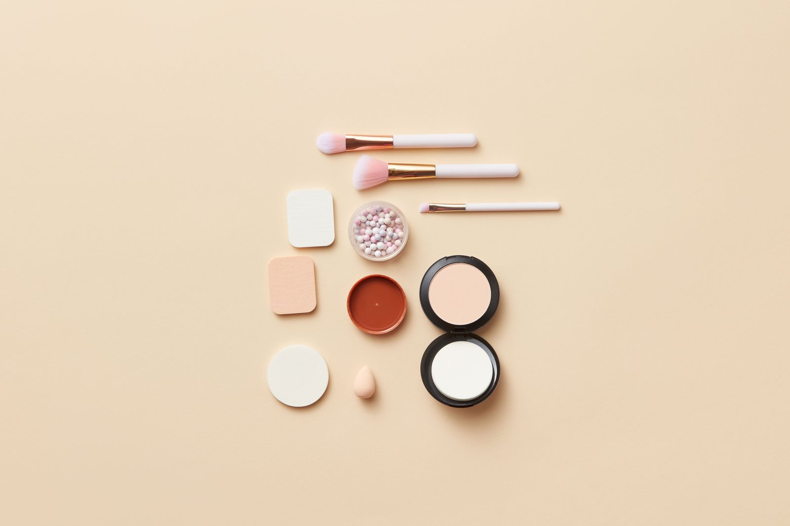
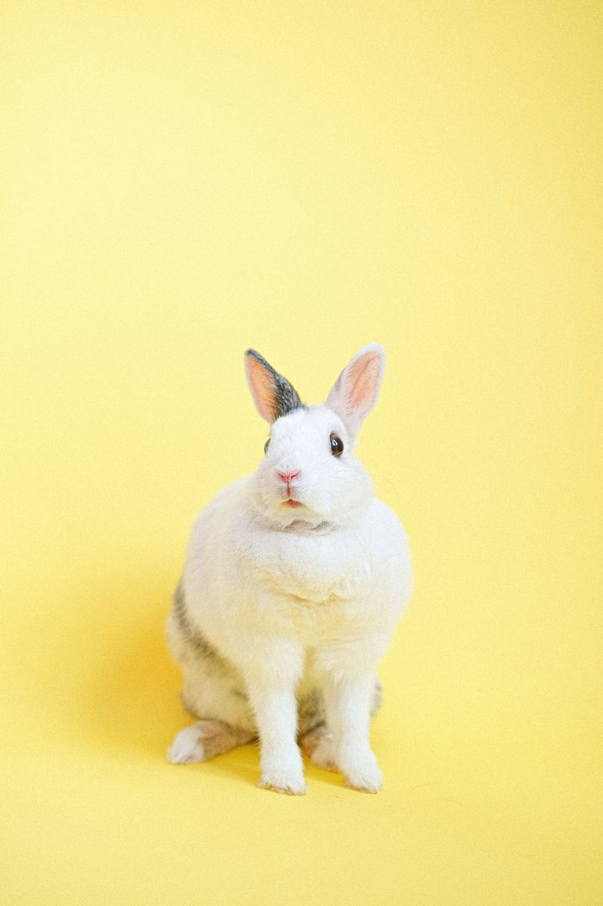

check a brand
See who's cruelty-free, who's vegan, and who still tests on animals, before you buy.
what's changed since you last looked →
key - what the symbols and price badges mean
🌿 fully cruelty-free & vegan
🐰 cruelty-free, check vegan status
⚠️ cruelty-free itself, parent company isn't
❌ tested on animals
🔍 not certified - as of the date checked, no evidence they do or don't test on animals
Price badges (£ budget · ££ mid · £££ premium · ££££ luxury) are a rough, general guide to market positioning, not exact pricing.
show me
certification
browse by category
We're still confirming where some brands are sold - brands without region info yet are left out of a region filter rather than guessed at.
beauty & skincare
🐰 cruelty-free, check vegan status per product
Faith in Nature
UK, Leaping Bunny certified, budget-friendly.
🌿 fully cruelty-free & vegan
Tropic Skincare
Leaping Bunny certified since 2015, 100% vegan -- UK, independent, founded by Susie Ma.
🐰 cruelty-free, check vegan status per product
Original Source
PETA-approved and Vegan Society certified.
🐰 cruelty-free, check vegan status per product
Superdrug own brand (wider range)
Leaping Bunny approved.
🐰 cruelty-free, check vegan status per product
Dr Bronner's
Leaping Bunny and PETA certified cruelty-free. Vegan except lip and body balms, which contain beeswax.
🐰 cruelty-free, check vegan status per product
Dr Organic
Certified cruelty-free (Leaping Bunny / Cruelty Free International); check individual product vegan status as not every item in the range is vegan.
🐰 cruelty-free, check vegan status per product
Collection
Collection says it doesn't test on animals itself and doesn't sell where testing is required by law, though it isn't Leaping Bunny or PETA certified. It's only made new products vegan since 2020, so vegan status varies by product - check the label.
🐰 cruelty-free, check vegan status per product
Carmex
Carmex says it has never tested on animals. It isn't vegan though - the balm itself contains beeswax and lanolin.
🌿 fully cruelty-free & vegan
Sukin
Leaping Bunny certified and 100% vegan -- Australian, independent, sold in Superdrug and Holland & Barrett.
🌿 fully cruelty-free & vegan
PHB Ethical Beauty
Cruelty Free International, PETA and Vegan Society certified -- every product is 100% vegan.
🌿 fully cruelty-free & vegan
Attitude
PETA certified cruelty-free and 100% vegan, independently owned -- household and personal care, sold via Ocado and Holland & Barrett.
🌿 fully cruelty-free & vegan
Ethique
Leaping Bunny certified and 100% vegan, plastic-free solid bars -- sold in Holland & Barrett and online.
🌿 fully cruelty-free & vegan
Salt of the Earth
Vegan Society and Leaping Bunny approved -- UK-made natural deodorants, sold in Holland & Barrett and Boots.
🌿 fully cruelty-free & vegan
Hurraw!
Choose Cruelty-Free, Leaping Bunny and PETA certified -- 100% vegan lip balms, sold in Holland & Barrett and online.
🐰 cruelty-free, check vegan status per product
Beauty Kitchen
Cruelty-free and B-Corp certified, but only some products are vegan-certified -- check the individual product.
🐰 cruelty-free, check vegan status per product
Suki
Leaping Bunny and PETA certified cruelty-free, but not fully vegan -- some products contain animal-derived ingredients.
🌿 fully cruelty-free & vegan
Natracare
Vegetarian Society Vegan Approved and PETA Business Friend -- completely cruelty-free and vegan period care.
🌿 fully cruelty-free & vegan
TOTM
PETA certified cruelty-free and vegan organic period care, B Corp certified.
🐰 cruelty-free, check vegan status per product
Revolution Beauty
PETA certified cruelty-free, and around three-quarters of the range is vegan and growing -- check the individual product.
🐰 cruelty-free, check vegan status per product
W7 Cosmetics
PETA certified cruelty-free, with a dedicated vegan range -- check the individual product.
🐰 cruelty-free, check vegan status per product
Technic Cosmetics
PETA certified cruelty-free, with vegan-friendly ranges -- check the individual product.
🐰 cruelty-free, check vegan status per product
Wet n Wild
PETA certified cruelty-free, doesn't sell where testing is required by law, but not every product is vegan.
🐰 cruelty-free, check vegan status per product
essence
Cruelty-free, including in mainland China, but not every product is vegan -- around 50 lines are marked vegan individually.
🐰 cruelty-free, check vegan status per product
Catrice
Cruelty-free, but not every product is vegan -- check the individual product.
🌿 fully cruelty-free & vegan
Avon
Leaping Bunny certified (Cruelty Free International) since 2024, covering its entire global product range. Avon says its products are vegan, though this isn't independently certified.
🌿 fully cruelty-free & vegan
The Natural Deodorant Co
Cruelty Free International certified, 100% vegan, independent UK brand.
🌿 fully cruelty-free & vegan
Little Soap Company
Leaping Bunny and Vegan Society certified, B Corp, independent UK brand.
🐰 cruelty-free, check vegan status per product
Solait (Superdrug)
Superdrug's own suncare range, covered by Superdrug's Leaping Bunny-certified own-brand policy. Vegan status varies by product.
🌿 fully cruelty-free & vegan
Arkive Headcare
Leaping Bunny certified, 100% vegan, independent brand founded by Adam Reed.
🐰 cruelty-free, check vegan status per product
Treaclemoon
Listed on PETA's Beauty Without Bunnies (self-declared assurance, not an independently audited certifier like Leaping Bunny). No vegan certification found.
🐰 cruelty-free, check vegan status per product
Daise
Appears on Cruelty Free International's approved-brands listing, but I could not independently re-verify the live certification text — worth a manual check of crueltyfreeinternational.org before treating as fully confirmed. Not vegan-certified; some products contain animal-derived ingredients.
🐰 cruelty-free, check vegan status per product
Lush
Independently owned, PETA-certified cruelty-free, no animal testing anywhere in the supply chain.
🐰 cruelty-free, check vegan status per product
#NEWGEN
Cruelty Free International approved brand. Cruelty-free approved by Cruelty Free International.
🐰 cruelty-free, check vegan status per product
17
17 believes in unbelievable beauty, elevated quality and accessible prices. Extensive range of affordable make-up essentials formulated with vegan ingredients. Cruelty-free approved by Cruelty Free International.
🐰 cruelty-free, check vegan status per product
7th Heaven
For over 30 years stood against animal testing, a founding CICAW member, approved by Cruelty Free International. Cruelty-free approved by Cruelty Free International.
🐰 cruelty-free, check vegan status per product
A Little Something
Cruelty Free International approved brand. Cruelty-free approved by Cruelty Free International.
🐰 cruelty-free, check vegan status per product
Abundant Natural Health
Dedicated to providing natural pain relief options with highly concentrated Magnesium Ranges. Australia's first stingless formulation. Cruelty-free approved by Cruelty Free International.
🐰 cruelty-free, check vegan status per product
Academy of Colour
Must-have beauty buys for less, powered by highly coveted ingredients and aesthetic packaging. Cruelty-free approved by Cruelty Free International.
🐰 cruelty-free, check vegan status per product
Adaptology
Cruelty Free International approved brand. Cruelty-free approved by Cruelty Free International.
🐰 cruelty-free, check vegan status per product
Addition Studio
Established in Australia in 2010, a conscious company envisioning refined design, healthy lifestyle and a clear mind. Cruelty-free approved by Cruelty Free International.
🐰 cruelty-free, check vegan status per product
Aesop
Established in 1987, formulates skin, hair and body care products of the finest quality. Cruelty-free approved by Cruelty Free International.
🐰 cruelty-free, check vegan status per product
Almora Botanica
Cruelty Free International approved brand. Cruelty-free approved by Cruelty Free International.
🐰 cruelty-free, check vegan status per product
Alta Marea
A prestige suncare brand crafting high-performance products rooted in Italian heritage. Cruelty-free approved by Cruelty Free International.
🐰 cruelty-free, check vegan status per product
Alter/Native by Suma
Buying from Suma promotes cruelty-free, vegetarian, organic products. Cruelty-free approved by Cruelty Free International.
🐰 cruelty-free, check vegan status per product
Alucia Organics
Cruelty Free International approved brand. Cruelty-free approved by Cruelty Free International.
🐰 cruelty-free, check vegan status per product
Amaras
Peruvian haircare brand combining natural-origin ingredients with rich sensorial experiences. Cruelty-free approved by Cruelty Free International.
🐰 cruelty-free, check vegan status per product
Anara Skincare
Created using the highest quality plant-based ingredients, helping with the well-ageing process. Cruelty-free approved by Cruelty Free International.
🐰 cruelty-free, check vegan status per product
Anko
Cruelty Free International approved brand. Cruelty-free approved by Cruelty Free International.
🐰 cruelty-free, check vegan status per product
Aqua Natural
Established in 1988, pioneered the introduction of strip sugar hair removal to the UK market. Cruelty-free approved by Cruelty Free International.
🐰 cruelty-free, check vegan status per product
Ar Ocean
Cruelty Free International approved brand. Cruelty-free approved by Cruelty Free International.
🐰 cruelty-free, check vegan status per product
AREU AREU
A safe living care brand seeking to deliver a healthy and stylish lifestyle. Cruelty-free approved by Cruelty Free International.
🐰 cruelty-free, check vegan status per product
Argital
Green clay-based cosmetics, natural certified and preservative free, established in Milan in 1979. Cruelty-free approved by Cruelty Free International.
🐰 cruelty-free, check vegan status per product
Arithmos
A precious collection of decadent oil blends, micro-batched and hand-blended. Cruelty-free approved by Cruelty Free International.
🐰 cruelty-free, check vegan status per product
Aromatherapy Associates
Founded in London in 1985 by pioneering therapists, born from a belief in the transformative power of essential oils. Cruelty-free approved by Cruelty Free International.
🐰 cruelty-free, check vegan status per product
Atelier Rebul
Over 125 years of dedication to scent expertise and pharmaceutical heritage. Cruelty-free approved by Cruelty Free International.
🐰 cruelty-free, check vegan status per product
atikha
All about curly hair, creating unique and exotic blends for the best results. Cruelty-free approved by Cruelty Free International.
🐰 cruelty-free, check vegan status per product
Aurelia London
A multi award-winning probiotic skincare brand fusing BioOrganic botanicals with proven probiotic ingredients. Cruelty-free approved by Cruelty Free International.
🐰 cruelty-free, check vegan status per product
Awake Organics
Creates hemp and frankincense-infused skin care, botanical fragrance, and natural deodorant. Cruelty-free approved by Cruelty Free International.
🐰 cruelty-free, check vegan status per product
B Skincare
A family run business making natural skincare creams on Bodmin Moor in Cornwall. Cruelty-free approved by Cruelty Free International.
🐰 cruelty-free, check vegan status per product
B.O.B.
Bars Over Bottles is a waterless beauty brand eliminating single-use plastic and toxic ingredients. Cruelty-free approved by Cruelty Free International.
🐰 cruelty-free, check vegan status per product
Bali Body
An Australian-made brand known for natural, cruelty-free suncare, self tan and skincare. Cruelty-free approved by Cruelty Free International.
🐰 cruelty-free, check vegan status per product
Balm Balm
Award-winning multi-functional products including face and lip balms. Cruelty-free approved by Cruelty Free International.
🐰 cruelty-free, check vegan status per product
Batch
Combines heritage ingredients with modern effective formulas, from personal care to home care. Cruelty-free approved by Cruelty Free International.
🐰 cruelty-free, check vegan status per product
Bath House
Born in the Lake District in 1997, believes in using nature's gentle, effective ingredients. Cruelty-free approved by Cruelty Free International.
🐰 cruelty-free, check vegan status per product
Beautiful Brows & Lashes
Cruelty Free International approved brand. Cruelty-free approved by Cruelty Free International.
🐰 cruelty-free, check vegan status per product
Beauty Favours
An award winning, UK made eco-friendly brand using organic oils, butters and actives. Cruelty-free approved by Cruelty Free International.
🐰 cruelty-free, check vegan status per product
Beauty Without Cruelty
All products 100% suitable for vegans and vegetarians, using recycled materials where possible. Cruelty-free approved by Cruelty Free International.
🐰 cruelty-free, check vegan status per product
Bed intentions
A sex and sleep brand for modern wellness. Cruelty-free approved by Cruelty Free International.
🐰 cruelty-free, check vegan status per product
Being
Cruelty Free International approved brand. Cruelty-free approved by Cruelty Free International.
🐰 cruelty-free, check vegan status per product
Bel Rebel
Perfumes that are cruelty-free, predominantly vegan, produced in small batches with compostable packaging. Cruelty-free approved by Cruelty Free International.
🐰 cruelty-free, check vegan status per product
Bellapierre Cosmetics
Produces and manufactures its own products, responding quickly to cosmetic market trends. Cruelty-free approved by Cruelty Free International.
🐰 cruelty-free, check vegan status per product
Benefit
Since 1976 at the forefront of making beauty radically feel-good, the world's #1 brow brand. Cruelty-free approved by Cruelty Free International.
🐰 cruelty-free, check vegan status per product
Biolage
Created in the 90's combining bio-science with the best of nature for hair and scalp health. Cruelty-free approved by Cruelty Free International.
🐰 cruelty-free, check vegan status per product
bioLEON
Producer and importer of organic personal care products, 100% plant origin. Cruelty-free approved by Cruelty Free International.
🐰 cruelty-free, check vegan status per product
Biolet
Cruelty Free International approved brand. Cruelty-free approved by Cruelty Free International.
🐰 cruelty-free, check vegan status per product
Blur London
A lab brand helping change the conversation around oily skin. Cruelty-free approved by Cruelty Free International.
🐰 cruelty-free, check vegan status per product
BMT
Cruelty Free International approved brand. Cruelty-free approved by Cruelty Free International.
🐰 cruelty-free, check vegan status per product
Boots
The UK's leading health and beauty retailer for 175 years. Cruelty-free approved by Cruelty Free International.
🐰 cruelty-free, check vegan status per product
Botanica Slavica
Uses local natural extracts, conveying quality with ethical and ecological thinking. Cruelty-free approved by Cruelty Free International.
🐰 cruelty-free, check vegan status per product
Botanico Vida Skincare
Cruelty Free International approved brand. Cruelty-free approved by Cruelty Free International.
🐰 cruelty-free, check vegan status per product
Botanics
Born in the UK in 1995 with the vision that nature-inspired beauty products should be accessible to all. Cruelty-free approved by Cruelty Free International.
🐰 cruelty-free, check vegan status per product
Boucleme
Naturally powerful haircare taking curls seriously, packed with plant extracts. Cruelty-free approved by Cruelty Free International.
🐰 cruelty-free, check vegan status per product
Boundary
Founded by two Singaporean entrepreneurs to break boundaries in hair and body care. Cruelty-free approved by Cruelty Free International.
🐰 cruelty-free, check vegan status per product
BRAVE.NEW.HAIR., BRAVE.NEW.CARE.
Creates clean haircare powered by modern, carefully tested ingredients. Cruelty-free approved by Cruelty Free International.
🐰 cruelty-free, check vegan status per product
By Sarah London
On a mission to empower a more conscious life, detailing full ingredient lists. Cruelty-free approved by Cruelty Free International.
🐰 cruelty-free, check vegan status per product
Byellie
A makeup company delivering results-driven products for a confident routine. Cruelty-free approved by Cruelty Free International.
🐰 cruelty-free, check vegan status per product
BYK Beauty
Cruelty Free International approved brand. Cruelty-free approved by Cruelty Free International.
🐰 cruelty-free, check vegan status per product
Byron Bay Skincare
Offers 100% natural products inspired by the beauty of Byron Bay. Cruelty-free approved by Cruelty Free International.
🌿 fully cruelty-free & vegan
Callen Olive
100% vegan skincare targeting the specific needs of legs and feet, developed by a podiatrist. Cruelty-free approved by Cruelty Free International.
🐰 cruelty-free, check vegan status per product
Cellis
A science-led skincare brand offering high-performance, multi-functional formulas. Cruelty-free approved by Cruelty Free International.
🐰 cruelty-free, check vegan status per product
CELUI by Anisa Sojka
Founded by UK's leading hair content creator. Cruelty-free approved by Cruelty Free International.
🐰 cruelty-free, check vegan status per product
Cenoura & Bronze
Cruelty Free International approved brand. Cruelty-free approved by Cruelty Free International.
🐰 cruelty-free, check vegan status per product
Cherish
A personal care wet wipes brand designed with convenience, hygiene, and sustainability in mind. Cruelty-free approved by Cruelty Free International.
🐰 cruelty-free, check vegan status per product
Childs Farm
The fastest growing and second largest baby & child toiletries brand in the UK. Cruelty-free approved by Cruelty Free International.
🐰 cruelty-free, check vegan status per product
Cien
Cruelty Free International approved brand. Cruelty-free approved by Cruelty Free International.
🐰 cruelty-free, check vegan status per product
Clemence Organics
Creates Australia's best certified organic and naturopathically formulated skin care. Cruelty-free approved by Cruelty Free International.
🐰 cruelty-free, check vegan status per product
Coco and Lola
Cruelty Free International approved brand. Cruelty-free approved by Cruelty Free International.
🐰 cruelty-free, check vegan status per product
Copper & Black
Cruelty Free International approved brand. Cruelty-free approved by Cruelty Free International.
🐰 cruelty-free, check vegan status per product
Cowshed
Cruelty Free International approved brand. Cruelty-free approved by Cruelty Free International.
🐰 cruelty-free, check vegan status per product
COZIUM
A science-led skincare brand creating intentional, fragrance-free face and body essentials. Cruelty-free approved by Cruelty Free International.
🐰 cruelty-free, check vegan status per product
CRANBOURN
Established in London, dedicated to creating sustainable luxury fragrances. Cruelty-free approved by Cruelty Free International.
🐰 cruelty-free, check vegan status per product
Cult Candy Cosmetics
A vegan and cruelty free makeup brand for everyone. Cruelty-free approved by Cruelty Free International.
🐰 cruelty-free, check vegan status per product
Cultivator Natural Products
Since 1988, discovering nature's inherent quality and delivering it to the community. Cruelty-free approved by Cruelty Free International.
🐰 cruelty-free, check vegan status per product
Cultured
A new way of approaching looking after your skin, especially the microbiome. Cruelty-free approved by Cruelty Free International.
🐰 cruelty-free, check vegan status per product
Curl Jar
A plant-powered curl activator that enriches natural pattern, tames frizz and hydrates. Cruelty-free approved by Cruelty Free International.
🐰 cruelty-free, check vegan status per product
Cyzone
A high-quality yet accessible beauty brand connecting young women in Latin America. Cruelty-free approved by Cruelty Free International.
🐰 cruelty-free, check vegan status per product
D'las
Cruelty Free International approved brand. Cruelty-free approved by Cruelty Free International.
🐰 cruelty-free, check vegan status per product
Dermacare
A line of natural skin care products, based in Honduras with local ingredients. Cruelty-free approved by Cruelty Free International.
🐰 cruelty-free, check vegan status per product
Dial
America's trusted brand for over 70 years, delivering clean, healthy skin. Cruelty-free approved by Cruelty Free International.
🐰 cruelty-free, check vegan status per product
Dianne Caine Australia
An innovative natural skin, body and hair care brand made in Perth. Cruelty-free approved by Cruelty Free International.
🐰 cruelty-free, check vegan status per product
Ditto Balms
Creates artisan solid perfumes inspired by designer fragrances, vegan and handmade. Cruelty-free approved by Cruelty Free International.
🐰 cruelty-free, check vegan status per product
Doussy
Cruelty Free International approved brand. Cruelty-free approved by Cruelty Free International.
🐰 cruelty-free, check vegan status per product
Down to Earth
Natural homemade creams and balms, formulated and made in Lancashire by hand. Cruelty-free approved by Cruelty Free International.
🐰 cruelty-free, check vegan status per product
DR HEALD
Cruelty Free International approved brand. Cruelty-free approved by Cruelty Free International.
🐰 cruelty-free, check vegan status per product
Dr Jackson's
A sustainable, science-led cosmetics company from the UK creating natural skincare and organic herbal teas. Cruelty-free approved by Cruelty Free International.
🐰 cruelty-free, check vegan status per product
Dr Sam's
Founded in 2018 by Dr Sam Bunting, cutting through the noise of skincare shopping. Cruelty-free approved by Cruelty Free International.
🐰 cruelty-free, check vegan status per product
DUO
Cruelty Free International approved brand. Cruelty-free approved by Cruelty Free International.
🐰 cruelty-free, check vegan status per product
Earth Conscious
Committed to providing natural skincare with minimal impact, made in the UK on the Isle of Wight. Cruelty-free approved by Cruelty Free International.
🐰 cruelty-free, check vegan status per product
Earth Sense
COSMOS organic certified, ethically Fair Trade sourced, Certified Palm Oil products. Cruelty-free approved by Cruelty Free International.
🐰 cruelty-free, check vegan status per product
Earthy Nail Polish
A 21-free, vegan nail polish brand made with naturally derived plant-based ingredients. Cruelty-free approved by Cruelty Free International.
🐰 cruelty-free, check vegan status per product
Ecoleaf by Suma
Buying from Suma promotes cruelty-free, vegetarian, organic products. Cruelty-free approved by Cruelty Free International.
🐰 cruelty-free, check vegan status per product
Elegance
A fast-growing, affordable toilet tissue brand providing great value on a daily essential. Cruelty-free approved by Cruelty Free International.
🐰 cruelty-free, check vegan status per product
Emma Hardie
Skincare based on targeted botanicals to support complexions of all ages. Cruelty-free approved by Cruelty Free International.
🐰 cruelty-free, check vegan status per product
Epiderma
Specialises in innovation for psoriasis, eczema, and acne solutions. Cruelty-free approved by Cruelty Free International.
🐰 cruelty-free, check vegan status per product
Esika
Creates products with high quality standards to make women feel absolute confidence. Cruelty-free approved by Cruelty Free International.
🐰 cruelty-free, check vegan status per product
Eternal Skincare
Creates effective, gentle skincare designed for dry, sensitive, and maturing skin. Cruelty-free approved by Cruelty Free International.
🐰 cruelty-free, check vegan status per product
Eudora
Launched in 2011 helping women assume their place as protagonists with rights. Cruelty-free approved by Cruelty Free International.
🐰 cruelty-free, check vegan status per product
Evdaimonia
Brings silk into daily beauty rituals, creating natural silk cocoons for pure, cruelty-free exfoliation. Cruelty-free approved by Cruelty Free International.
🐰 cruelty-free, check vegan status per product
every&one
Sustainable skincare, a 5-in-1 multi-tasking fragrance free, genderless formula. Cruelty-free approved by Cruelty Free International.
🐰 cruelty-free, check vegan status per product
Evolve Organic Beauty
An award winning British producer of natural and organic skin, body and hair products. Cruelty-free approved by Cruelty Free International.
🐰 cruelty-free, check vegan status per product
Evre
A clean and natural range of skincare formulated for tween and teen skin. Cruelty-free approved by Cruelty Free International.
🐰 cruelty-free, check vegan status per product
FAB Brows
Manufacture and retail a revolutionary all-in-one brow makeover system. Cruelty-free approved by Cruelty Free International.
🐰 cruelty-free, check vegan status per product
Facetheory
A British skincare brand producing natural vegan skincare with super-effective active ingredients. Cruelty-free approved by Cruelty Free International.
🐰 cruelty-free, check vegan status per product
FatFace
A fast-growing lifestyle clothing and accessories retailer based in the UK. Cruelty-free approved by Cruelty Free International.
🐰 cruelty-free, check vegan status per product
Fill Refill Co.
Responsible & refillable laundry, cleaning, body & hair care refills, registered with 1% For The Planet. Cruelty-free approved by Cruelty Free International.
🐰 cruelty-free, check vegan status per product
Filter by Molly-Mae
Created by Molly-Mae Hague to revolutionize the way we tan. Cruelty-free approved by Cruelty Free International.
🐰 cruelty-free, check vegan status per product
Floralys
Cruelty Free International approved brand. Cruelty-free approved by Cruelty Free International.
🐰 cruelty-free, check vegan status per product
Florentine
Cruelty Free International approved brand. Cruelty-free approved by Cruelty Free International.
🐰 cruelty-free, check vegan status per product
Forest & Shore
Dedicated to creating clean haircare that targets the root of the problem. Cruelty-free approved by Cruelty Free International.
🐰 cruelty-free, check vegan status per product
formil
Cruelty Free International approved brand. Cruelty-free approved by Cruelty Free International.
🐰 cruelty-free, check vegan status per product
Formulae Prescott
Frances Prescott is a natural and cruelty free brand offering sustainably sourced products. Cruelty-free approved by Cruelty Free International.
🐰 cruelty-free, check vegan status per product
Fresh & Dry
Talc-Free Baby Powder made in the UK, independently certified. Cruelty-free approved by Cruelty Free International.
🐰 cruelty-free, check vegan status per product
FRIA
Made in Italy cosmetic products for personal hygiene, care and cleansing. Cruelty-free approved by Cruelty Free International.
🐰 cruelty-free, check vegan status per product
FRIA 1000 GIORNI
Made in Italy cosmetic products for personal hygiene, care and cleansing. Cruelty-free approved by Cruelty Free International.
🐰 cruelty-free, check vegan status per product
FRIA EASY
Made in Italy cosmetic products for personal hygiene, care and cleansing. Cruelty-free approved by Cruelty Free International.
🐰 cruelty-free, check vegan status per product
FRIA k-Beauty Inspired
Made in Italy cosmetic products for personal hygiene, care and cleansing. Cruelty-free approved by Cruelty Free International.
🐰 cruelty-free, check vegan status per product
Friendly Soap
Uses only natural, ethically sourced, sustainable and plant based ingredients for eco-friendly cleaning products. Cruelty-free approved by Cruelty Free International.
🐰 cruelty-free, check vegan status per product
Fuarain Skincare
Premium skincare powered by a unique Scottish mineral water blended with wildcrafted botanical actives. Cruelty-free approved by Cruelty Free International.
🐰 cruelty-free, check vegan status per product
Furtastic
Cruelty Free International approved brand. Cruelty-free approved by Cruelty Free International.
🐰 cruelty-free, check vegan status per product
Fushi
Began with Ayurvedic family recipes, creating award-winning ethically sourced health and beauty products. Cruelty-free approved by Cruelty Free International.
🐰 cruelty-free, check vegan status per product
Gaia Skincare
Inspired by the Greek Goddess, handmade in Britain using traditional production methods. Cruelty-free approved by Cruelty Free International.
🐰 cruelty-free, check vegan status per product
GATINEAU
Harnesses the power of natural ingredients and cutting-edge biotechnology, over 90 years of trust. Cruelty-free approved by Cruelty Free International.
🐰 cruelty-free, check vegan status per product
GEL.IT.UP by GIUP
Professional gel polish, builder gel and nail systems, HEMA-free formulas. Cruelty-free approved by Cruelty Free International.
🐰 cruelty-free, check vegan status per product
Gender Neutral
Cruelty Free International approved brand. Cruelty-free approved by Cruelty Free International.
🐰 cruelty-free, check vegan status per product
GenGlo
Founded to protect young skin, providing gentle, effective skincare for tweens and teens. Cruelty-free approved by Cruelty Free International.
🐰 cruelty-free, check vegan status per product
GHS Direct
Specialises in biodegradable and concentrate liquid disinfectants, sanitisers and detergents. Cruelty-free approved by Cruelty Free International.
🐰 cruelty-free, check vegan status per product
Gingingers
A small family run skincare business in West Yorkshire creating natural, cold-processed products. Cruelty-free approved by Cruelty Free International.
🐰 cruelty-free, check vegan status per product
Girls with Attitude
Creating sassy, trend led products with affordable prices and professional quality. Cruelty-free approved by Cruelty Free International.
🐰 cruelty-free, check vegan status per product
Glow For It
A vegan, cruelty-free beauty brand best known for its TikTok viral Lash Growth Serum. Cruelty-free approved by Cruelty Free International.
🐰 cruelty-free, check vegan status per product
Glow Hub
Hard-working formulas and personalisable routines for skin. Cruelty-free approved by Cruelty Free International.
🐰 cruelty-free, check vegan status per product
Goats of the Gorge
Skin care products made with goat's milk and natural oils, from near Bristol airport. Cruelty-free approved by Cruelty Free International.
🐰 cruelty-free, check vegan status per product
Good Bubble
Bath, body and haircare products for babies & children, mild and gentle formulations. Cruelty-free approved by Cruelty Free International.
🐰 cruelty-free, check vegan status per product
Good One
The Warehouse is New Zealand's biggest one stop shop for great products at a bargain. Cruelty-free approved by Cruelty Free International.
🐰 cruelty-free, check vegan status per product
Green Wave
A family hair line with a unique formulation, enriched with organic aloe vera. Cruelty-free approved by Cruelty Free International.
🐰 cruelty-free, check vegan status per product
Hair by Sam McKnight
Iconic hairstylist Sam McKnight's kit of high-performance products. Cruelty-free approved by Cruelty Free International.
🐰 cruelty-free, check vegan status per product
Handmade Naturals
A family run firm with an emphasis on natural ingredients, covering body care to natural soaps. Cruelty-free approved by Cruelty Free International.
🐰 cruelty-free, check vegan status per product
Hanna Sillitoe
A best-selling author and world-renowned expert in skin healing. Cruelty-free approved by Cruelty Free International.
🐰 cruelty-free, check vegan status per product
Hannah Natural
Cruelty Free International approved brand. Cruelty-free approved by Cruelty Free International.
🐰 cruelty-free, check vegan status per product
HAPPY ANNE
Cruelty Free International approved brand. Cruelty-free approved by Cruelty Free International.
🐰 cruelty-free, check vegan status per product
Helan
One of Italy's leading companies specializing in Natural Cosmetics. Cruelty-free approved by Cruelty Free International.
🐰 cruelty-free, check vegan status per product
Herbal Elea
Producer and importer of organic personal care products, 100% plant origin. Cruelty-free approved by Cruelty Free International.
🐰 cruelty-free, check vegan status per product
Hershesons
Believes great hair should be simple, easy and fun no matter who you are. Cruelty-free approved by Cruelty Free International.
🐰 cruelty-free, check vegan status per product
Hiip
Cruelty Free International approved brand. Cruelty-free approved by Cruelty Free International.
🐰 cruelty-free, check vegan status per product
HOWND
A multi-award winning ethical pet care brand loved by dog owners and professional groomers. Cruelty-free approved by Cruelty Free International.
🐰 cruelty-free, check vegan status per product
i+m NATURKOSMETIK BERLIN
A true pioneer in organic and natural cosmetics, active since 1978. Cruelty-free approved by Cruelty Free International.
🐰 cruelty-free, check vegan status per product
INCIA
Glohe offers a 100% natural world for your family, free from synthetic scents and parabens. Cruelty-free approved by Cruelty Free International.
🐰 cruelty-free, check vegan status per product
Inhana Skincare
Inari Skincare produces luxury, certified natural skincare brands hand-crafted in the UK. Cruelty-free approved by Cruelty Free International.
🐰 cruelty-free, check vegan status per product
Inlight Beauty & Wellness
100% organic skincare, highly effective products hand-crafted in small batches. Cruelty-free approved by Cruelty Free International.
🐰 cruelty-free, check vegan status per product
IREN Shizen
A luxury Japanese skincare brand best known for its BIYUSEN proprietary bio-ingredient. Cruelty-free approved by Cruelty Free International.
🐰 cruelty-free, check vegan status per product
itreatskin
Specialises in problematic skin such as Eczema, Acne, Psoriasis and Pigmentation. Cruelty-free approved by Cruelty Free International.
🐰 cruelty-free, check vegan status per product
Je Suis Vert
Owned by Monoprix, a leader in omnichannel town centre shopping in France. Cruelty-free approved by Cruelty Free International.
🐰 cruelty-free, check vegan status per product
Jeuneora
Uses the power of nature with a helping hand from science for natural supplements and cruelty-free skincare. Cruelty-free approved by Cruelty Free International.
🐰 cruelty-free, check vegan status per product
John Lewis & Partners
Cruelty Free International approved brand. Cruelty-free approved by Cruelty Free International.
🐰 cruelty-free, check vegan status per product
Julie Clarke Candles
Uses 100% pure natural waxes from a biodegradable renewable resource, with vegan fragrances. Cruelty-free approved by Cruelty Free International.
🐰 cruelty-free, check vegan status per product
Juvenate Skincare
New Zealand's largest Professional Clinic Range delivering transformative skincare. Cruelty-free approved by Cruelty Free International.
🐰 cruelty-free, check vegan status per product
Kadalys
France's first natural, organic, vegan cosmetics brand, expert in the science of the banana tree. Cruelty-free approved by Cruelty Free International.
🐰 cruelty-free, check vegan status per product
KASH Beauty
An Irish cosmetics brand offering high-performance, cruelty-free makeup for all skin tones. Cruelty-free approved by Cruelty Free International.
🐰 cruelty-free, check vegan status per product
KATIVA
Cruelty Free International approved brand. Cruelty-free approved by Cruelty Free International.
🐰 cruelty-free, check vegan status per product
Katoa Botanicals
A circular, plastic free skincare brand connecting people and planet. Cruelty-free approved by Cruelty Free International.
🐰 cruelty-free, check vegan status per product
Kids Stuff
Cruelty Free International approved brand. Cruelty-free approved by Cruelty Free International.
🐰 cruelty-free, check vegan status per product
Kireyna
A Berlin-based skincare brand with a three-product system supporting the skin's barrier. Cruelty-free approved by Cruelty Free International.
🐰 cruelty-free, check vegan status per product
Kmart
We're Kmart, here to make everyday living brighter since 1969 in Victoria. Cruelty-free approved by Cruelty Free International.
🐰 cruelty-free, check vegan status per product
Kone Care
A Mexican brand with conscious cosmetic formulas that nourish skin and take care of the environment. Cruelty-free approved by Cruelty Free International.
🐰 cruelty-free, check vegan status per product
KOTANICAL
The first company in Ireland to distil oil from natural native sources. Cruelty-free approved by Cruelty Free International.
🐰 cruelty-free, check vegan status per product
Kurl Kitchen
A haircare brand by sisters Fleur and Keshia, bringing West African kitchen ingredients. Cruelty-free approved by Cruelty Free International.
🐰 cruelty-free, check vegan status per product
KVITOK
A Slovak brand of all natural handmade cosmetics, built on the belief skin reflects internal health. Cruelty-free approved by Cruelty Free International.
🐰 cruelty-free, check vegan status per product
Kyushi
High performing, sustainably sourced, cruelty free, hand blended mindful products. Cruelty-free approved by Cruelty Free International.
🐰 cruelty-free, check vegan status per product
L'BEL
Where beauty, health and technology merge. Cruelty-free approved by Cruelty Free International.
🐰 cruelty-free, check vegan status per product
L'Erbolario Societa Benefit Srl
An Italian company founded in 1978 in Lodi, manufacturing plant-based cosmetics. Cruelty-free approved by Cruelty Free International.
🐰 cruelty-free, check vegan status per product
La Cosmetica srl
Cruelty Free International approved brand. Cruelty-free approved by Cruelty Free International.
🐰 cruelty-free, check vegan status per product
LABBOK
An innovative manufacturer of premium organic skincare, 100% natural, vegan and cruelty free. Cruelty-free approved by Cruelty Free International.
🐰 cruelty-free, check vegan status per product
Lacura
Cruelty Free International approved brand. Cruelty-free approved by Cruelty Free International.
🐰 cruelty-free, check vegan status per product
Lanolips
Award-winning, Aussie, dry-skin stuff made with love and lanolin, natural + cruelty-free. Cruelty-free approved by Cruelty Free International.
🐰 cruelty-free, check vegan status per product
Leeukopf Laboratories
Cruelty Free International approved brand. Cruelty-free approved by Cruelty Free International.
🐰 cruelty-free, check vegan status per product
Lefay SPA Cosmetic Line
Created according to nutricosmetics principles, combining nature and science. Cruelty-free approved by Cruelty Free International.
🐰 cruelty-free, check vegan status per product
Lerana
Cruelty Free International approved brand. Cruelty-free approved by Cruelty Free International.
🐰 cruelty-free, check vegan status per product
Levrana
Natural and organic cosmetics for face, hair and hygiene, for the whole family. Cruelty-free approved by Cruelty Free International.
🐰 cruelty-free, check vegan status per product
Lidl GB
Established in the UK in 1994, over 25,000 employees and 850 stores. Cruelty-free approved by Cruelty Free International.
🐰 cruelty-free, check vegan status per product
Lidl Ireland & Lidl Northern Ireland
Established on the island of Ireland in 1999, over 6,000 employees and 227 stores. Cruelty-free approved by Cruelty Free International.
🐰 cruelty-free, check vegan status per product
Lipstains Gold
Cruelty Free International approved brand. Cruelty-free approved by Cruelty Free International.
🐰 cruelty-free, check vegan status per product
Little Heroes
Provides a wide range of baby wipes including sensitive, gentle and biodegradable. Cruelty-free approved by Cruelty Free International.
🐰 cruelty-free, check vegan status per product
Liz Earle
Creates naturally inspired skincare that really works to transform skin for all women. Cruelty-free approved by Cruelty Free International.
🐰 cruelty-free, check vegan status per product
Lock Stock & Barrel
A proudly independent brand of professional men's grooming products, used by leading barbers. Cruelty-free approved by Cruelty Free International.
🐰 cruelty-free, check vegan status per product
London Copyright
A creative and innovative cosmetics brand believing in embracing individuality. Cruelty-free approved by Cruelty Free International.
🐰 cruelty-free, check vegan status per product
Look Fabulous Forever
A movement to celebrate mature beauty and challenge perceptions of ageing. Cruelty-free approved by Cruelty Free International.
🐰 cruelty-free, check vegan status per product
Love Ethical beauty
Cruelty Free International approved brand. Cruelty-free approved by Cruelty Free International.
🐰 cruelty-free, check vegan status per product
Love Katie
Created from 25 years as a professional makeup artist to make beauty simple for everyone. Cruelty-free approved by Cruelty Free International.
🐰 cruelty-free, check vegan status per product
Love Pets
Cruelty Free International approved brand. Cruelty-free approved by Cruelty Free International.
🐰 cruelty-free, check vegan status per product
Lucy Bee
Founded in 2012 by a CIBTAC-qualified beauty therapist and mum, an independent British brand. Cruelty-free approved by Cruelty Free International.
🐰 cruelty-free, check vegan status per product
Lumity
An award-winning range of 100% natural face and body treatments with plant oils and botanicals. Cruelty-free approved by Cruelty Free International.
🐰 cruelty-free, check vegan status per product
Lupilu
Cruelty Free International approved brand. Cruelty-free approved by Cruelty Free International.
🐰 cruelty-free, check vegan status per product
Made for Life Organics
100% organic wellbeing products hand-blended in Cornwall for 15 years. Cruelty-free approved by Cruelty Free International.
🐰 cruelty-free, check vegan status per product
Made Of More
High performance, Doctor-led, clinically active skincare for hormonal skin from 40 and beyond. Cruelty-free approved by Cruelty Free International.
🐰 cruelty-free, check vegan status per product
Magic Lips
Cruelty Free International approved brand. Cruelty-free approved by Cruelty Free International.
🐰 cruelty-free, check vegan status per product
Magnum Guardex
Cruelty Free International approved brand. Cruelty-free approved by Cruelty Free International.
🐰 cruelty-free, check vegan status per product
ManCave
Discover naturally derived men's grooming gear, combining premium formulas with a fair price. Cruelty-free approved by Cruelty Free International.
🐰 cruelty-free, check vegan status per product
Manhattan
Cosmetics for more than 50 years, trends and diversity important to the brand. Cruelty-free approved by Cruelty Free International.
🐰 cruelty-free, check vegan status per product
Manufaktura
Collaborates with dermatologists and cosmetics specialists on unique formulae. Cruelty-free approved by Cruelty Free International.
🐰 cruelty-free, check vegan status per product
Maria Nila
High quality vegan products making it easy to take a step towards a sustainable, friendlier world. Cruelty-free approved by Cruelty Free International.
🐰 cruelty-free, check vegan status per product
Mark Birch Trichlogist
Helps understand what a healthy scalp and better hair growth needs. Cruelty-free approved by Cruelty Free International.
🐰 cruelty-free, check vegan status per product
Maroqueen
A small family business selling cosmetic oils, mostly from Morocco. Cruelty-free approved by Cruelty Free International.
🐰 cruelty-free, check vegan status per product
MAZEL
Grape extract combined with modern technology and a blend of active ingredients from leading laboratories. Cruelty-free approved by Cruelty Free International.
🐰 cruelty-free, check vegan status per product
Mazillo
A natural skincare brand inspired by Bulgarian folklore, reviving history and traditions. Cruelty-free approved by Cruelty Free International.
🐰 cruelty-free, check vegan status per product
Mendittorosa
Artistic perfumes made in Italy. Cruelty-free approved by Cruelty Free International.
🐰 cruelty-free, check vegan status per product
Mervue Natural Skincare
Created a certified organic skin and body care range of the highest quality and efficacy. Cruelty-free approved by Cruelty Free International.
🐰 cruelty-free, check vegan status per product
Micky Day
Designed, tested and hand made in New Zealand, a self-care range. Cruelty-free approved by Cruelty Free International.
🐰 cruelty-free, check vegan status per product
MIELEV
Cruelty Free International approved brand. Cruelty-free approved by Cruelty Free International.
🐰 cruelty-free, check vegan status per product
Mienna Cosmetics Ltd
A cruelty-free cosmetics brand focused on creating beautifully formulated, inclusive makeup. Cruelty-free approved by Cruelty Free International.
🐰 cruelty-free, check vegan status per product
Miss Organics
100% natural, organic, vegan skincare inspiring holistic living in harmony with nature. Cruelty-free approved by Cruelty Free International.
🐰 cruelty-free, check vegan status per product
Modern Botany
Inspired by botanical science, uses natural ingredients sourced from Ireland and around the world. Cruelty-free approved by Cruelty Free International.
🐰 cruelty-free, check vegan status per product
Molton Brown
Expertly blended in London, signature fragrances, bath and shower gels, home and hand care. Cruelty-free approved by Cruelty Free International.
🐰 cruelty-free, check vegan status per product
Monange
Cruelty Free International approved brand. Cruelty-free approved by Cruelty Free International.
🐰 cruelty-free, check vegan status per product
MONDAY Haircare
An award-winning, modern beauty brand making luxury haircare more inclusive. Cruelty-free approved by Cruelty Free International.
🐰 cruelty-free, check vegan status per product
Moss & Adams
A premium-inspired personal care brand offering vegan and cruelty-free hand washes and lifestyle products. Cruelty-free approved by Cruelty Free International.
🐰 cruelty-free, check vegan status per product
Mother Nailture
A 21-free, vegan nail polish brand made with naturally derived plant-based ingredients. Cruelty-free approved by Cruelty Free International.
🐰 cruelty-free, check vegan status per product
Mum&You
A sustainable baby brand developed in 2016 offering biodegradable baby wipes and eco-nappies. Cruelty-free approved by Cruelty Free International.
🐰 cruelty-free, check vegan status per product
Nakin
Eco beauty at its absolute best, an award winning luxurious natural skincare system. Cruelty-free approved by Cruelty Free International.
🐰 cruelty-free, check vegan status per product
Nala's Baby
Created by a family wanting the absolute best for their daughter's hair & skin. Cruelty-free approved by Cruelty Free International.
🐰 cruelty-free, check vegan status per product
Natroma
A family run holistic therapy and handmade aromatherapy skincare business based in Stourbridge. Cruelty-free approved by Cruelty Free International.
🐰 cruelty-free, check vegan status per product
Natura
Cruelty Free International approved brand. Cruelty-free approved by Cruelty Free International.
🐰 cruelty-free, check vegan status per product
Natural by Nature Oils
Established in 1974, manufactures high quality pure and organic essential oils. Cruelty-free approved by Cruelty Free International.
🐰 cruelty-free, check vegan status per product
Naturally Tiwa Skincare
A proudly British company using Mother Nature's gifts to create natural skincare products. Cruelty-free approved by Cruelty Free International.
🐰 cruelty-free, check vegan status per product
Nature's Divine
Values itself to be vegan, cruelty free and eco-friendly with oils and balms for babies and family. Cruelty-free approved by Cruelty Free International.
🐰 cruelty-free, check vegan status per product
Neal & Wolf
A professional haircare brand known for luxurious, high-performance, fully-vegan formulas. Cruelty-free approved by Cruelty Free International.
🐰 cruelty-free, check vegan status per product
Neal's Yard Remedies
Brings the most natural organic health and beauty products to improve quality of life. Cruelty-free approved by Cruelty Free International.
🐰 cruelty-free, check vegan status per product
NEX ENVIRONMENT
Cruelty Free International approved brand. Cruelty-free approved by Cruelty Free International.
🐰 cruelty-free, check vegan status per product
NICE
Made in Italy cosmetic products for personal hygiene, care and cleansing. Cruelty-free approved by Cruelty Free International.
🐰 cruelty-free, check vegan status per product
nimonths+
Cruelty Free International approved brand. Cruelty-free approved by Cruelty Free International.
🐰 cruelty-free, check vegan status per product
Nourish London
A British organic skincare company offering high-performance organic, vegan & cruelty-free certified skincare. Cruelty-free approved by Cruelty Free International.
🐰 cruelty-free, check vegan status per product
NOVARETIN
A unique and innovative facial care line with serum, face cream and eye cream. Cruelty-free approved by Cruelty Free International.
🌿 fully cruelty-free & vegan
NSFA Beauty
A 100% vegan & cruelty-free brand launched in 2018 by Czech influencer ANY. Cruelty-free approved by Cruelty Free International.
🐰 cruelty-free, check vegan status per product
Nunaia
Creates moments of connection through green beauty rituals, researched in Ecuador and Peru. Cruelty-free approved by Cruelty Free International.
🐰 cruelty-free, check vegan status per product
Nursem
Caring skincare developed with nurses to help combat the effects of relentless hand-washing. Cruelty-free approved by Cruelty Free International.
🐰 cruelty-free, check vegan status per product
Nutmeg
Cruelty Free International approved brand. Cruelty-free approved by Cruelty Free International.
🐰 cruelty-free, check vegan status per product
O Boticario
Founded in 1977 in Curitiba, the largest cosmetics franchising network in Brazil. Cruelty-free approved by Cruelty Free International.
🐰 cruelty-free, check vegan status per product
O.U.I
Cruelty Free International approved brand. Cruelty-free approved by Cruelty Free International.
🐰 cruelty-free, check vegan status per product
Obvs Skincare
Specialises in organic, vegan products that solve skin concerns naturally, handmade by Sian Louise. Cruelty-free approved by Cruelty Free International.
🐰 cruelty-free, check vegan status per product
Oio Lab
Harnesses the power of natural ingredients, extracted with advanced technology. Cruelty-free approved by Cruelty Free International.
🐰 cruelty-free, check vegan status per product
Okiki Skincare
A mother and daughter West African inspired handmade natural skincare brand. Cruelty-free approved by Cruelty Free International.
🐰 cruelty-free, check vegan status per product
Omorovicza
A multi award-winning skincare brand harnessing the curative culture of the Budapest baths. Cruelty-free approved by Cruelty Free International.
🐰 cruelty-free, check vegan status per product
Organic Skin Australia
Launched with a genuine commitment to skincare, the environment, and ethical business practices. Cruelty-free approved by Cruelty Free International.
🐰 cruelty-free, check vegan status per product
Organicspa
Blends bioactive Certified Organic ingredients with potent natural actives, vitamins and oils. Cruelty-free approved by Cruelty Free International.
🐰 cruelty-free, check vegan status per product
OXX
Cruelty Free International approved brand. Cruelty-free approved by Cruelty Free International.
🐰 cruelty-free, check vegan status per product
P.Louise
Founded by Paige Williams, starting as a Makeup Academy in 2014, established as Cosmetics in 2018. Cruelty-free approved by Cruelty Free International.
🐰 cruelty-free, check vegan status per product
Pai Skincare
Formulated with sensitive and allergy-prone skin in mind, free from irritants. Cruelty-free approved by Cruelty Free International.
🐰 cruelty-free, check vegan status per product
Paixao
Cruelty Free International approved brand. Cruelty-free approved by Cruelty Free International.
🐰 cruelty-free, check vegan status per product
Paladone
Cruelty Free International approved brand. Cruelty-free approved by Cruelty Free International.
🐰 cruelty-free, check vegan status per product
Pamoja
An award-winning natural, vegan and cruelty-free skincare brand for dry, sensitive and hormonal skin. Cruelty-free approved by Cruelty Free International.
🐰 cruelty-free, check vegan status per product
Penneys
Cruelty Free International approved brand. Cruelty-free approved by Cruelty Free International.
🐰 cruelty-free, check vegan status per product
People of the Earth
Creates high-performance, filler-free skincare designed for life outdoors, ethically made in Australia. Cruelty-free approved by Cruelty Free International.
🐰 cruelty-free, check vegan status per product
Perfect Girl
Cruelty Free International approved brand. Cruelty-free approved by Cruelty Free International.
🐰 cruelty-free, check vegan status per product
philosophy
Believes in focusing on how and why good skincare works, grounded in patented formulas. Cruelty-free approved by Cruelty Free International.
🐰 cruelty-free, check vegan status per product
Pike's Pouches
Launched to offer high quality natural products in a sustainable alternative to plastic bottles. Cruelty-free approved by Cruelty Free International.
🐰 cruelty-free, check vegan status per product
Planted Skincare
Cruelty Free International approved brand. Cruelty-free approved by Cruelty Free International.
🐰 cruelty-free, check vegan status per product
Poppin' Yang
A Greek luxury brand offering men's care products crafted with high-quality raw materials. Cruelty-free approved by Cruelty Free International.
🐰 cruelty-free, check vegan status per product
Primark
Operates over 355 stores in eleven countries with over 75,000 employees. Cruelty-free approved by Cruelty Free International.
🐰 cruelty-free, check vegan status per product
Primavera Life
Aspires to enhance well-being of body, mind and soul with natural skincare and aromatherapy. Cruelty-free approved by Cruelty Free International.
🐰 cruelty-free, check vegan status per product
Pura Vie
The ideal on-the-go, discreet solution for cleanliness, biodegradable wipes for incontinence. Cruelty-free approved by Cruelty Free International.
🐰 cruelty-free, check vegan status per product
Pure Argan Co
Created to provide the best quality organic Argan oil, fair and sustainable to an all-female cooperative. Cruelty-free approved by Cruelty Free International.
🐰 cruelty-free, check vegan status per product
Pure Chemistry
A Colombian company dedicated to applied investigation in dermatochemistry for cosmetic development. Cruelty-free approved by Cruelty Free International.
🐰 cruelty-free, check vegan status per product
Purearth
A luxury Ayurvedic wellness house rooted in rare Himalayan botanicals. Cruelty-free approved by Cruelty Free International.
🐰 cruelty-free, check vegan status per product
Purextracts
Award-winning, world's first company to sell dried oil extracts for maximum health benefits. Cruelty-free approved by Cruelty Free International.
🐰 cruelty-free, check vegan status per product
Quem disse, Berenice
Launched in 2012 to question and expand make-up concepts, inspiring women's individuality. Cruelty-free approved by Cruelty Free International.
🐰 cruelty-free, check vegan status per product
Raven Botanicals
An intelligent skincare brand for ethical consumers, gathering Scottish, circular and organic plant extracts. Cruelty-free approved by Cruelty Free International.
🐰 cruelty-free, check vegan status per product
Rebul
Symbolizes the scent history of Turkey, enriching heritage with unique eau de colognes. Cruelty-free approved by Cruelty Free International.
🐰 cruelty-free, check vegan status per product
REFY
An award-winning brand all about simplifying beauty with innovation and versatility. Cruelty-free approved by Cruelty Free International.
🐰 cruelty-free, check vegan status per product
Rhug Wild Beauty
A luxurious skincare collection from Rhug Estate with hand-picked wild forage. Cruelty-free approved by Cruelty Free International.
🐰 cruelty-free, check vegan status per product
Risque
A leading nail polish brand in Brazil with more than half a century of history. Cruelty-free approved by Cruelty Free International.
🐰 cruelty-free, check vegan status per product
RSPCA
Cruelty Free International approved brand. Cruelty-free approved by Cruelty Free International.
🐰 cruelty-free, check vegan status per product
S'able Labs
Genderless skincare highlighting the best in ethically sourced African ingredients. Cruelty-free approved by Cruelty Free International.
🐰 cruelty-free, check vegan status per product
Sacred
A nature-led, circular skincare brand designed to elevate daily self-care, handcrafted in small batches. Cruelty-free approved by Cruelty Free International.
🐰 cruelty-free, check vegan status per product
Safeway
A grocery brand owned by Morrisons. Cruelty-free approved by Cruelty Free International.
🐰 cruelty-free, check vegan status per product
SAIRA
A conscious, certified organic skincare brand blending Himalayan beauty wisdom with modern science. Cruelty-free approved by Cruelty Free International.
🐰 cruelty-free, check vegan status per product
SAMAYA Ayurveda
Multi-award winning British brand revolutionising skincare with clinically-proven actives. Cruelty-free approved by Cruelty Free International.
🐰 cruelty-free, check vegan status per product
Sanctum
Journey began in 1992 on the hinterland of Byron Bay, achieving Certified Organic status in 2006. Cruelty-free approved by Cruelty Free International.
🐰 cruelty-free, check vegan status per product
Sansin
Cruelty Free International approved brand. Cruelty-free approved by Cruelty Free International.
🐰 cruelty-free, check vegan status per product
Santaverde
Pure aloe vera juice uniquely rich in active ingredients from own certified organic cultivation in Andalusia. Cruelty-free approved by Cruelty Free International.
🐰 cruelty-free, check vegan status per product
Sarafumi
Formulated with sustainability at the core, conscious of the ever-changing eco-friendly business landscape. Cruelty-free approved by Cruelty Free International.
🐰 cruelty-free, check vegan status per product
SBTRCT Skincare
A unique and innovative solid skincare brand trailblazing sustainability and transparency. Cruelty-free approved by Cruelty Free International.
🐰 cruelty-free, check vegan status per product
Scott & Lawson
Cruelty Free International approved brand. Cruelty-free approved by Cruelty Free International.
🐰 cruelty-free, check vegan status per product
Sculpted by Aimee
Founded in 2016 by award winning makeup artist Aimee Connolly, one of the fastest growing beauty brands. Cruelty-free approved by Cruelty Free International.
🐰 cruelty-free, check vegan status per product
Seeds of Colour
A beauty biotech company using innovative technology to extract pigments from fruits and vegetables. Cruelty-free approved by Cruelty Free International.
🐰 cruelty-free, check vegan status per product
Seniha Skincare
Creates all products using clean, high-performance ingredients following a strict banned ingredients list. Cruelty-free approved by Cruelty Free International.
🐰 cruelty-free, check vegan status per product
Sensapur
A next-gen skincare brand developed by a leading dermatologist/allergist, built on evidence-based actives. Cruelty-free approved by Cruelty Free International.
🐰 cruelty-free, check vegan status per product
Sensatia
Founded in Bali, Indonesia in 2000, creates clean botanical skincare with naturally derived ingredients. Cruelty-free approved by Cruelty Free International.
🐰 cruelty-free, check vegan status per product
SensiLait
Powdered Milk hydrating cosmetic mask with hyaluronic acid, environmentally friendly. Cruelty-free approved by Cruelty Free International.
🐰 cruelty-free, check vegan status per product
Seresilk
The only Australian made, cruelty-free silk skincare product in the world, harnessing silk's healing properties. Cruelty-free approved by Cruelty Free International.
🐰 cruelty-free, check vegan status per product
Shades of London
Cruelty Free International approved brand. Cruelty-free approved by Cruelty Free International.
🐰 cruelty-free, check vegan status per product
Shedid & Parrish
A salon quality, 100% natural, vegan brand for curl and textured hair. Cruelty-free approved by Cruelty Free International.
🐰 cruelty-free, check vegan status per product
SHEGLAM
Since 2019 dedicated to providing the ultimate beauty experience to makeup lovers around the world. Cruelty-free approved by Cruelty Free International.
🐰 cruelty-free, check vegan status per product
Silvan Skincare
An independent award-winning skincare company based in Presteigne, Powys. Cruelty-free approved by Cruelty Free International.
🐰 cruelty-free, check vegan status per product
Siskyn Skincare Oils
Superfood for your skin, made with 100% natural and organic botanical oils and nothing else. Cruelty-free approved by Cruelty Free International.
🐰 cruelty-free, check vegan status per product
SIVENO
Glohe offers a 100% natural world for your family, free from synthetic scents and parabens. Cruelty-free approved by Cruelty Free International.
🐰 cruelty-free, check vegan status per product
Skin Deep
For a long-lasting golden tan, self-tanning wipes formulated for face and body. Cruelty-free approved by Cruelty Free International.
🐰 cruelty-free, check vegan status per product
Skin Formulas
An Irish, science-led skincare brand delivering visible results through clinically proven ingredients. Cruelty-free approved by Cruelty Free International.
🐰 cruelty-free, check vegan status per product
Soak Sunday
Experiential bath and body care to boost mood and elevate senses. Cruelty-free approved by Cruelty Free International.
🐰 cruelty-free, check vegan status per product
Soap Valley
Lovingly crafted handmade soaps and candles, born from a need for more wonderment. Cruelty-free approved by Cruelty Free International.
🐰 cruelty-free, check vegan status per product
Soaphoria
Natural and organic cosmetics brand conveying quality with ethical and ecological thinking. Cruelty-free approved by Cruelty Free International.
🐰 cruelty-free, check vegan status per product
SOFT & DELICATE
Made in Italy cosmetic products for personal hygiene, care and cleansing. Cruelty-free approved by Cruelty Free International.
🐰 cruelty-free, check vegan status per product
Softy
Providing comfort during allergy season, enriched with soothing oat kernel and aloe vera. Cruelty-free approved by Cruelty Free International.
🐰 cruelty-free, check vegan status per product
Soho Skin
Intelligent skincare for modern living by Soho House, made in partnership with members worldwide. Cruelty-free approved by Cruelty Free International.
🐰 cruelty-free, check vegan status per product
Solitaire UK Ltd
Cruelty Free International approved brand. Cruelty-free approved by Cruelty Free International.
🐰 cruelty-free, check vegan status per product
St. Moriz
Developed a range of tanning products for every tone and skin type, manufactured in England. Cruelty-free approved by Cruelty Free International.
🐰 cruelty-free, check vegan status per product
Stardrops
Cruelty Free International approved brand. Cruelty-free approved by Cruelty Free International.
🐰 cruelty-free, check vegan status per product
STEREO
Cruelty Free International approved brand. Cruelty-free approved by Cruelty Free International.
🐰 cruelty-free, check vegan status per product
Strange Luxury
Democratises luxury, offering the world's finest beauty essentials for the new generation. Cruelty-free approved by Cruelty Free International.
🐰 cruelty-free, check vegan status per product
STUDIO Gel
Cruelty Free International approved brand. Cruelty-free approved by Cruelty Free International.
🐰 cruelty-free, check vegan status per product
Studio Milligram
Born in 2017, grew out of Milligram's decades-long relationship with strong design and quality tools. Cruelty-free approved by Cruelty Free International.
🐰 cruelty-free, check vegan status per product
Subtle Energies
Creates results-based aromatherapy, natural skincare and wellness solutions founded on Ayurveda principles. Cruelty-free approved by Cruelty Free International.
🐰 cruelty-free, check vegan status per product
Sue Marsh
Cruelty Free International approved brand. Cruelty-free approved by Cruelty Free International.
🐰 cruelty-free, check vegan status per product
Sugar Coated
A proudly British brand leading the way in natural hair removal with unique sugar syrup blends. Cruelty-free approved by Cruelty Free International.
🐰 cruelty-free, check vegan status per product
Sundae
Shake up your shower routine with whipped shower foams, invigorating bursts of creamy foam. Cruelty-free approved by Cruelty Free International.
🐰 cruelty-free, check vegan status per product
Superdrug
The UK's second largest beauty and health retailer, all own-brand toiletries and beauty products approved. Cruelty-free approved by Cruelty Free International.
🐰 cruelty-free, check vegan status per product
Swypes
Extra-large, biodegradable, sweat-removing body wipes, cruelty-free and gentle on skin. Cruelty-free approved by Cruelty Free International.
🐰 cruelty-free, check vegan status per product
Synergie Skin
A leading Australian skincare and mineral makeup company founded by cosmetic chemist Terri Vinson. Cruelty-free approved by Cruelty Free International.
🐰 cruelty-free, check vegan status per product
Syorell
A vegan skincare brand based in Turkiye, focused on sun protection and sensitive skin. Cruelty-free approved by Cruelty Free International.
🐰 cruelty-free, check vegan status per product
System Nature
Developed by Professors from the University of Leeds, a clinically proven natural alternative to retinol. Cruelty-free approved by Cruelty Free International.
🐰 cruelty-free, check vegan status per product
TanOrganic
Uses only natural and organic ingredients, the only Eco-Certified self-tanning brand in the world. Cruelty-free approved by Cruelty Free International.
🐰 cruelty-free, check vegan status per product
Temko Cosmetics
A trusted Turkish brand specializing in eco-conscious, cruelty-free amenity cosmetics for hospitality. Cruelty-free approved by Cruelty Free International.
🐰 cruelty-free, check vegan status per product
That Good Hair
A plant-powered natural hair care brand for waves, curls, coils and locs. Cruelty-free approved by Cruelty Free International.
🐰 cruelty-free, check vegan status per product
The Australian Natural Soap Company
Redefines the way you think about soap with pure plant oil and essential oil soaps. Cruelty-free approved by Cruelty Free International.
🐰 cruelty-free, check vegan status per product
THE BARBERIA
Cruelty Free International approved brand. Cruelty-free approved by Cruelty Free International.
🐰 cruelty-free, check vegan status per product
The Cheeky Panda
First a toilet roll revolution, now bamboozling baby wipes, whipped up from biodegradable bamboo. Cruelty-free approved by Cruelty Free International.
🌿 fully cruelty-free & vegan
The COCOON ORIGINAL VIETNAM
A 100% vegan cosmetics brand from Vietnam reflecting true Vietnamese beauty. Cruelty-free approved by Cruelty Free International.
🐰 cruelty-free, check vegan status per product
THE EAST TO WEST LIFESTYLE CO
A cosmetic & well-being brand inspired by Persian lifestyle principles and traditional medicine. Cruelty-free approved by Cruelty Free International.
🐰 cruelty-free, check vegan status per product
The Gel Crew
Cruelty Free International approved brand. Cruelty-free approved by Cruelty Free International.
🐰 cruelty-free, check vegan status per product
The Good One
Cruelty Free International approved brand. Cruelty-free approved by Cruelty Free International.
🐰 cruelty-free, check vegan status per product
The Handmade Soap Company
99.7% natural, no nasties, made with coconut derivatives and vegetable emulsifiers. Cruelty-free approved by Cruelty Free International.
🐰 cruelty-free, check vegan status per product
The Honest Midwife
Motherlylove natural skincare for pregnancy, birth, baby and all mothers, award winning and vegan friendly. Cruelty-free approved by Cruelty Free International.
🐰 cruelty-free, check vegan status per product
The Konjac Sponge Co
The original Korean Konjac Sponge, 100% pure natural plant power, a multi award-winning vegan skin care system. Cruelty-free approved by Cruelty Free International.
🐰 cruelty-free, check vegan status per product
The Natural Soapworks
Cruelty Free International approved brand. Cruelty-free approved by Cruelty Free International.
🐰 cruelty-free, check vegan status per product
The Powder Shampoo
A revolutionary powder-to-foam shampoo and body wash brand, water-activated and plastic-free. Cruelty-free approved by Cruelty Free International.
🐰 cruelty-free, check vegan status per product
The Skin Edition
A COSMOS Organic certified, vegan, and cruelty-free skincare brand, fragrance-free and barrier-friendly. Cruelty-free approved by Cruelty Free International.
🐰 cruelty-free, check vegan status per product
Thermitek Ltd
Cruelty Free International approved brand. Cruelty-free approved by Cruelty Free International.
🐰 cruelty-free, check vegan status per product
Throda Skincare
Skincare is evolving, and Throda is leading the shift with patent pending technology. Cruelty-free approved by Cruelty Free International.
🐰 cruelty-free, check vegan status per product
Tootilab
A professional haircare company on a mission to end hair discrimination for all curl types. Cruelty-free approved by Cruelty Free International.
🐰 cruelty-free, check vegan status per product
Trigwell Cosmetics
Founded by Zoe Trigwell in 2020, started as a passion project growing rapidly. Cruelty-free approved by Cruelty Free International.
🐰 cruelty-free, check vegan status per product
True Alchemy
Cruelty Free International approved brand. Cruelty-free approved by Cruelty Free International.
🐰 cruelty-free, check vegan status per product
Tulita
A Melbourne based luxury fragrance house crafting award winning natural fragrances. Cruelty-free approved by Cruelty Free International.
🐰 cruelty-free, check vegan status per product
UKVIAT
Makes natural skincare products that deliver on their promise while looking after the planet. Cruelty-free approved by Cruelty Free International.
🐰 cruelty-free, check vegan status per product
Ultra Glow
Cruelty Free International approved brand. Cruelty-free approved by Cruelty Free International.
🐰 cruelty-free, check vegan status per product
Ultraceuticals
Australia's leading cosmeceutical-grade skincare brand, delivering powerful results for over 25 years. Cruelty-free approved by Cruelty Free International.
🐰 cruelty-free, check vegan status per product
UNIQ MADE
Cruelty Free International approved brand. Cruelty-free approved by Cruelty Free International.
🐰 cruelty-free, check vegan status per product
Unique Boutique
Contemporary and fresh, an ideal brand for little ones that love to dress up, safe washable makeup. Cruelty-free approved by Cruelty Free International.
🐰 cruelty-free, check vegan status per product
UpCircle Beauty
Uses wonderful ingredients that would otherwise go to landfill, like used coffee grounds and fruit stones. Cruelty-free approved by Cruelty Free International.
🐰 cruelty-free, check vegan status per product
VeganTan
Cruelty Free International approved brand. Cruelty-free approved by Cruelty Free International.
🐰 cruelty-free, check vegan status per product
Vult
Acquired by Grupo Boticario in 2018, a 100% Brazilian brand democratizing beauty. Cruelty-free approved by Cruelty Free International.
🐰 cruelty-free, check vegan status per product
W5
Cruelty Free International approved brand. Cruelty-free approved by Cruelty Free International.
🐰 cruelty-free, check vegan status per product
WILD SCIENCE Lab
Natural, vegan, clean and intelligent hair and skin solutions. Cruelty-free approved by Cruelty Free International.
🐰 cruelty-free, check vegan status per product
Wildsmith Skin
Renowned for clinically proven, high-performance formulations without compromising on responsibility. Cruelty-free approved by Cruelty Free International.
🐰 cruelty-free, check vegan status per product
WildWash
A premium British pet wellness brand creating natural PH-balanced grooming products for dogs, cats, and horses. Cruelty-free approved by Cruelty Free International.
🐰 cruelty-free, check vegan status per product
Wizz
Cruelty Free International approved brand. Cruelty-free approved by Cruelty Free International.
🐰 cruelty-free, check vegan status per product
Yes! Nurse
Cruelty Free International approved brand. Cruelty-free approved by Cruelty Free International.
🐰 cruelty-free, check vegan status per product
YOM BEAUTY
Cruelty Free International approved brand. Cruelty-free approved by Cruelty Free International.
🐰 cruelty-free, check vegan status per product
Young ePure
Cruelty Free International approved brand. Cruelty-free approved by Cruelty Free International.
🐰 cruelty-free, check vegan status per product
Zoya Goes Pretty
Believes in nature's simple and genuine formula, butters that are 100% raw, unrefined and organic. Cruelty-free approved by Cruelty Free International.
🐰 cruelty-free, check vegan status per product
Zuvi
A beauty-tech company committed to rethinking how people experience beauty through technological innovation. Cruelty-free approved by Cruelty Free International.
🐰 cruelty-free, check vegan status per product
Alba Botanica
Listed by PETA as not testing on animals.
🐰 cruelty-free, check vegan status per product
American Safety Razor
Listed by PETA as not testing on animals.
🐰 cruelty-free, check vegan status per product
Anastasia Beverly Hills
Listed by PETA as not testing on animals.
🐰 cruelty-free, check vegan status per product
Andalou Naturals
Listed by PETA as not testing on animals.
🐰 cruelty-free, check vegan status per product
Arbonne International
Listed by PETA as not testing on animals.
🐰 cruelty-free, check vegan status per product
Aunt Fannie's
Listed by PETA as not testing on animals.
🐰 cruelty-free, check vegan status per product
Australian Gold
Listed by PETA as not testing on animals.
🐰 cruelty-free, check vegan status per product
Avalon Organics
Listed by PETA as not testing on animals.
🐰 cruelty-free, check vegan status per product
BPerfect Cosmetics
Listed by PETA as not testing on animals.
🐰 cruelty-free, check vegan status per product
butter LONDON
Listed by PETA as not testing on animals.
🐰 cruelty-free, check vegan status per product
Black Girl Sunscreen
Listed by PETA as not testing on animals.
🐰 cruelty-free, check vegan status per product
Bob's Red Mill
Listed by PETA as not testing on animals.
🐰 cruelty-free, check vegan status per product
Carol's Daughter
Listed by PETA as not testing on animals.
🐰 cruelty-free, check vegan status per product
ColourPop Cosmetics
Listed by PETA as not testing on animals.
🐰 cruelty-free, check vegan status per product
Concrete Minerals
Listed by PETA as not testing on animals.
🐰 cruelty-free, check vegan status per product
Cover FX Skin Care
Listed by PETA as not testing on animals.
🐰 cruelty-free, check vegan status per product
Crayola Beauty
Listed by PETA as not testing on animals.
🐰 cruelty-free, check vegan status per product
Caswell-Massey
Listed by PETA as not testing on animals.
🐰 cruelty-free, check vegan status per product
CJ Olive Young
Listed by PETA as not testing on animals.
🐰 cruelty-free, check vegan status per product
Dr. Hauschka Skin Care
Listed by PETA as not testing on animals.
🐰 cruelty-free, check vegan status per product
Dr. Dennis Gross Skincare
Listed by PETA as not testing on animals.
🐰 cruelty-free, check vegan status per product
Dolce & Gabbana Beauty
Listed by PETA as not testing on animals.
🐰 cruelty-free, check vegan status per product
Design Essentials
Listed by PETA as not testing on animals.
🐰 cruelty-free, check vegan status per product
derma-e Natural Bodycare
Listed by PETA as not testing on animals.
🐰 cruelty-free, check vegan status per product
Desert Essence
Listed by PETA as not testing on animals.
🐰 cruelty-free, check vegan status per product
Eminence Organic Skin Care
Listed by PETA as not testing on animals.
🐰 cruelty-free, check vegan status per product
European Wax Center
Listed by PETA as not testing on animals.
🐰 cruelty-free, check vegan status per product
Every Man Jack
Listed by PETA as not testing on animals.
🐰 cruelty-free, check vegan status per product
Earth Friendly Products
Listed by PETA as not testing on animals.
🐰 cruelty-free, check vegan status per product
Eco-DenT International
Listed by PETA as not testing on animals.
🐰 cruelty-free, check vegan status per product
First Aid Beauty
Listed by PETA as not testing on animals.
🐰 cruelty-free, check vegan status per product
Florence By Mills
Listed by PETA as not testing on animals.
🐰 cruelty-free, check vegan status per product
Freeman Beauty
Listed by PETA as not testing on animals.
🐰 cruelty-free, check vegan status per product
Fruit of the Earth
Listed by PETA as not testing on animals.
🐰 cruelty-free, check vegan status per product
Function of Beauty
Listed by PETA as not testing on animals.
🐰 cruelty-free, check vegan status per product
Fudge
Haircare. Listed by PETA as not testing on animals.
🐰 cruelty-free, check vegan status per product
Forest Essentials
Listed by PETA as not testing on animals.
🐰 cruelty-free, check vegan status per product
Garden of Life
Listed by PETA as not testing on animals.
🐰 cruelty-free, check vegan status per product
Gelish
Nail brand. Listed by PETA as not testing on animals.
🐰 cruelty-free, check vegan status per product
Glo Skin Beauty
Listed by PETA as not testing on animals.
🐰 cruelty-free, check vegan status per product
Go-To Skincare
Listed by PETA as not testing on animals.
🐰 cruelty-free, check vegan status per product
GOSH Copenhagen
Listed by PETA as not testing on animals.
🐰 cruelty-free, check vegan status per product
Grande Cosmetics
Listed by PETA as not testing on animals.
🐰 cruelty-free, check vegan status per product
Grown Alchemist
Listed by PETA as not testing on animals.
🐰 cruelty-free, check vegan status per product
Hello Products
Listed by PETA as not testing on animals.
🐰 cruelty-free, check vegan status per product
Honeybee Gardens
Listed by PETA as not testing on animals.
🐰 cruelty-free, check vegan status per product
Herbivore Botanicals
Listed by PETA as not testing on animals.
🐰 cruelty-free, check vegan status per product
Iconic London
Listed by PETA as not testing on animals.
🐰 cruelty-free, check vegan status per product
IDUN Minerals
Listed by PETA as not testing on animals.
🐰 cruelty-free, check vegan status per product
Image Skincare
Listed by PETA as not testing on animals.
🐰 cruelty-free, check vegan status per product
Inglot Cosmetics
Listed by PETA as not testing on animals.
🐰 cruelty-free, check vegan status per product
Isle Of Paradise
Listed by PETA as not testing on animals.
🐰 cruelty-free, check vegan status per product
J Beverly Hills
Listed by PETA as not testing on animals.
🐰 cruelty-free, check vegan status per product
jane iredale
The Skin Care Makeup. Listed by PETA as not testing on animals.
🐰 cruelty-free, check vegan status per product
John Masters Organics
Listed by PETA as not testing on animals.
🐰 cruelty-free, check vegan status per product
Josie Maran Cosmetics
Listed by PETA as not testing on animals.
🐰 cruelty-free, check vegan status per product
Jesse's Girl Cosmetics
Listed by PETA as not testing on animals.
🐰 cruelty-free, check vegan status per product
John Paul Mitchell Systems
Listed by PETA as not testing on animals.
🐰 cruelty-free, check vegan status per product
KVD Beauty
Formerly Kat Von D Beauty. Listed by PETA as not testing on animals.
🐰 cruelty-free, check vegan status per product
Kate Somerville
Listed by PETA as not testing on animals.
🐰 cruelty-free, check vegan status per product
Keys Soulcare
Listed by PETA as not testing on animals.
🐰 cruelty-free, check vegan status per product
King of Shaves
Listed by PETA as not testing on animals.
🐰 cruelty-free, check vegan status per product
Kiss Products
Listed by PETA as not testing on animals.
🐰 cruelty-free, check vegan status per product
Kora Organics
Listed by PETA as not testing on animals.
🐰 cruelty-free, check vegan status per product
Kristin Ess Hair
Listed by PETA as not testing on animals.
🐰 cruelty-free, check vegan status per product
Kryolan Professional Make-up
Listed by PETA as not testing on animals.
🐰 cruelty-free, check vegan status per product
lavera Naturkosmetik
Listed by PETA as not testing on animals.
🐰 cruelty-free, check vegan status per product
Madam CJ Walker
Listed by PETA as not testing on animals.
🐰 cruelty-free, check vegan status per product
Maple Holistics
Listed by PETA as not testing on animals.
🐰 cruelty-free, check vegan status per product
Milani Cosmetics
Listed by PETA as not testing on animals.
🐰 cruelty-free, check vegan status per product
MyChelle Dermaceuticals
Listed by PETA as not testing on animals.
🐰 cruelty-free, check vegan status per product
Michael Todd Beauty
Listed by PETA as not testing on animals.
🐰 cruelty-free, check vegan status per product
Mesauda Milano
Listed by PETA as not testing on animals.
🐰 cruelty-free, check vegan status per product
Nature's Gate
Listed by PETA as not testing on animals.
🐰 cruelty-free, check vegan status per product
Newman's Own Organics
Listed by PETA as not testing on animals.
🐰 cruelty-free, check vegan status per product
Nest Fragrances
Listed by PETA as not testing on animals.
🐰 cruelty-free, check vegan status per product
Nude by Nature
Listed by PETA as not testing on animals.
🐰 cruelty-free, check vegan status per product
Obsessive Compulsive Cosmetics
Listed by PETA as not testing on animals.
🐰 cruelty-free, check vegan status per product
Ole Henriksen
Listed by PETA as not testing on animals.
🐰 cruelty-free, check vegan status per product
ORIBE Hair Care
Listed by PETA as not testing on animals.
🐰 cruelty-free, check vegan status per product
Organic Harvest
Listed by PETA as not testing on animals.
🐰 cruelty-free, check vegan status per product
Pangea Organics
Listed by PETA as not testing on animals.
🐰 cruelty-free, check vegan status per product
Pattern Beauty
Listed by PETA as not testing on animals.
🐰 cruelty-free, check vegan status per product
Physicians Formula
Listed by PETA as not testing on animals.
🐰 cruelty-free, check vegan status per product
Plum Goodness
Listed by PETA as not testing on animals.
🐰 cruelty-free, check vegan status per product
Pretty Vulgar
Listed by PETA as not testing on animals.
🐰 cruelty-free, check vegan status per product
r.e.m. beauty
Listed by PETA as not testing on animals.
🐰 cruelty-free, check vegan status per product
Real Techniques
Listed by PETA as not testing on animals.
🐰 cruelty-free, check vegan status per product
RevitaLash Cosmetics
Listed by PETA as not testing on animals.
🐰 cruelty-free, check vegan status per product
Salon Selectives
Listed by PETA as not testing on animals.
🐰 cruelty-free, check vegan status per product
ShiKai Products
Listed by PETA as not testing on animals.
🐰 cruelty-free, check vegan status per product
Sol de Janeiro
Listed by PETA as not testing on animals.
🐰 cruelty-free, check vegan status per product
Splat Hair Color
Listed by PETA as not testing on animals.
🐰 cruelty-free, check vegan status per product
Stila Cosmetics
Listed by PETA as not testing on animals.
🐰 cruelty-free, check vegan status per product
Sugar Cosmetics
Listed by PETA as not testing on animals.
🐰 cruelty-free, check vegan status per product
Sugarpill Cosmetics
Listed by PETA as not testing on animals.
🐰 cruelty-free, check vegan status per product
Sunday Riley Modern Skincare
Listed by PETA as not testing on animals.
🐰 cruelty-free, check vegan status per product
Susanne Kaufmann
Listed by PETA as not testing on animals.
🐰 cruelty-free, check vegan status per product
Tata Harper Skincare
Listed by PETA as not testing on animals.
🐰 cruelty-free, check vegan status per product
Thayers Natural
Listed by PETA as not testing on animals.
🐰 cruelty-free, check vegan status per product
The Honest Company
Listed by PETA as not testing on animals.
🐰 cruelty-free, check vegan status per product
Thrive Causemetics
Listed by PETA as not testing on animals.
🐰 cruelty-free, check vegan status per product
Trader Joe's Company
Listed by PETA as not testing on animals.
🐰 cruelty-free, check vegan status per product
Trevor Sorbie
Listed by PETA as not testing on animals.
🐰 cruelty-free, check vegan status per product
True Botanicals
Listed by PETA as not testing on animals.
🐰 cruelty-free, check vegan status per product
Tangle Teezer
Listed by PETA as not testing on animals.
🐰 cruelty-free, check vegan status per product
Ulta Beauty Collection
Listed by PETA as not testing on animals.
🐰 cruelty-free, check vegan status per product
UNITE Haircare
Listed by PETA as not testing on animals.
🐰 cruelty-free, check vegan status per product
Vasanti Cosmetics
Listed by PETA as not testing on animals.
🐰 cruelty-free, check vegan status per product
Whole Foods Market 365
Listed by PETA as not testing on animals.
🐰 cruelty-free, check vegan status per product
Youth To The People
Listed by PETA as not testing on animals.
🐰 cruelty-free, check vegan status per product
Youngblood Mineral Cosmetics
Listed by PETA as not testing on animals.
🐰 cruelty-free, check vegan status per product
Zia Natural Skincare
Listed by PETA as not testing on animals.
🐰 cruelty-free, check vegan status per product
Zuzu Cosmetics
Listed by PETA as not testing on animals.
worth a disclaimer - beauty & haircare
⚠️ cruelty-free itself, parent company isn't
Imperial Leather
Owned by PZ Cussons. PETA lists PZ Cussons as a company, but Imperial Leather has no independent listing with PETA, Leaping Bunny or Cruelty Free International - treat the cruelty-free claim as unverified at time of writing.
⚠️ cruelty-free itself, parent company isn't
Carex
Owned by PZ Cussons. PETA lists PZ Cussons as a company, but Carex has no independent listing with PETA, Leaping Bunny or Cruelty Free International - treat the cruelty-free claim as unverified at time of writing. Carex's own FAQ says its washes/gels/sprays are vegan, but that's a self-declared, uncertified claim too.
⚠️ cruelty-free itself, parent company isn't
NYX
NYX is PETA Beauty Without Bunnies certified and cruelty-free itself, but its parent company L'Oréal is not - L'Oréal sells in mainland China, where animal testing can still be required. NYX itself avoids selling there.
⚠️ cruelty-free itself, parent company isn't
Bulldog
Leaping Bunny certified, 100% vegan, owned by Edgewell.
⚠️ cruelty-free itself, parent company isn't
TRESemmé
PETA certified cruelty-free since 2021, owned by Unilever.
⚠️ cruelty-free itself, parent company isn't
Lynx
PETA certified cruelty-free since 2024, owned by Unilever.
⚠️ cruelty-free itself, parent company isn't
Aussie
PETA certified cruelty-free, owned by Procter & Gamble. Some products are vegan but not the full range - check individual items.
⚠️ cruelty-free itself, parent company isn't
Wild
Cruelty-free and vegan itself, acquired by Unilever in April 2025.
⚠️ cruelty-free itself, parent company isn't
The Ordinary
DECIEM is cruelty-free and vegan. Owned by Estée Lauder.
⚠️ cruelty-free itself, parent company isn't
The Body Shop
Leaping Bunny and PETA certified cruelty-free. No longer fully vegan as of 2026 - the brand quietly dropped its 100% vegan claim after new ownership; check individual products.
⚠️ cruelty-free itself, parent company isn't
Sleek MakeUP
Cruelty-free itself, but owned by Walgreens Boots Alliance, who do test on animals, and doesn't currently offer vegan products.
⚠️ cruelty-free itself, parent company isn't
St Ives
PETA certified cruelty-free and mostly vegan itself, but owned by Unilever, who do test on animals.
⚠️ cruelty-free itself, parent company isn't
Soap & Glory
Leaping Bunny certified cruelty-free itself, but owned by Walgreens Boots Alliance, who do test on animals. Vegan status varies by product.
⚠️ cruelty-free itself, parent company isn't
CoverGirl
Leaping Bunny certified cruelty-free itself, but owned by Coty, who do test on animals. Not every product is vegan.
⚠️ cruelty-free itself, parent company isn't
gruum
Cruelty-free and vegan claims are self-declared and not independently verified against a recognised certifier at time of writing.
⚠️ cruelty-free itself, parent company isn't
Habi
Boots' own wellness and skincare range. Boots says it's vegan and cruelty-free, but claims are self-declared and not independently verified against a recognised certifier at time of writing.
🔍 unverified claim
Right Guard
As of 2026-09-02, ownership has changed hands (formerly Henkel, now reported under Thriving Brands) and no animal-testing policy or certification could be confirmed either way.
🔍 parent company's testing policy is also unverified
🔍 unverified claim
Piz Buin
As of 2026-09-02, now owned by Sarantis Group after a change in ownership - no animal-testing policy or certification confirmed either way.
🔍 parent company's testing policy is also unverified
🔍 unverified claim
Hawaiian Tropic
Owned by Edgewell Personal Care, which has confirmed it allows animal testing on its products where required by law (for example, to register cosmetics for sale in mainland China). Hawaiian Tropic itself has no independent cruelty-free certification, so treated as unverified rather than bad.
❌ parent company tests on animals
🔍 unverified claim
Riemann P20
As of 2026-09-02, current ownership could not be reliably confirmed from a primary source, so no animal-testing policy could be checked either way.
🔍 parent company's testing policy is also unverified
🔍 unverified claim
Vosene
Owned by Thornton & Ross (part of STADA). As of 2026-09-02, no animal-testing policy or China market exposure could be confirmed from a primary source.
🔍 parent company's testing policy is also unverified
🔍 unverified claim
Alberto Balsam
Owned by McBride plc, same parent as Bloo. As of 2026-09-02, no animal-testing policy or certification was found either way.
🔍 parent company's testing policy is also unverified
🔍 unverified claim
Charles Worthington
As of 2026-09-02, current ownership is unclear from available sources (previously linked to PZ Cussons, more recently reported under Beautology) - no animal-testing policy or certification confirmed.
🔍 parent company's testing policy is also unverified
🔍 unverified claim
E45
Owned by Karo Pharma / Karo Healthcare (bought from Reckitt in 2021-22). As of 2026-09-02, no animal-testing policy or China market exposure could be confirmed from a primary source.
🔍 parent company's testing policy is also unverified
⚠️ cruelty-free itself, parent company isn't
Aveda
Leaping Bunny certified since 2022, owned by Estée Lauder Companies.
⚠️ cruelty-free itself, parent company isn't
Tarte Cosmetics
PETA certified cruelty-free, owned by Kosé Corporation. Tarte itself does not sell in mainland China.
⚠️ cruelty-free itself, parent company isn't
Bumble and Bumble
PETA certified cruelty-free, owned by Estée Lauder Companies.
⚠️ cruelty-free itself, parent company isn't
Hourglass Cosmetics
PETA certified cruelty-free, owned by Unilever.
⚠️ cruelty-free itself, parent company isn't
Smashbox
PETA certified cruelty-free, owned by Estée Lauder Companies.
⚠️ cruelty-free itself, parent company isn't
Too Faced
PETA certified cruelty-free, owned by Estée Lauder Companies.
⚠️ cruelty-free itself, parent company isn't
Living Proof
PETA certified cruelty-free, owned by Unilever.
⚠️ cruelty-free itself, parent company isn't
Love Beauty and Planet
PETA certified cruelty-free, owned by Unilever.
⚠️ cruelty-free itself, parent company isn't
Lakmé
PETA certified cruelty-free, owned by Unilever (Hindustan Unilever).
⚠️ cruelty-free itself, parent company isn't
Nubian Heritage
PETA certified cruelty-free, owned by Unilever.
⚠️ cruelty-free itself, parent company isn't
Schmidt's Naturals
PETA certified cruelty-free, owned by Unilever.
⚠️ cruelty-free itself, parent company isn't
Paula's Choice
Leaping Bunny certified, owned by Unilever.
⚠️ cruelty-free itself, parent company isn't
Joico
PETA certified cruelty-free since 2021, owned by Henkel.
⚠️ cruelty-free itself, parent company isn't
Logona
PETA certified cruelty-free, owned by L’Oréal (via Logocos Naturkosmetik).
⚠️ cruelty-free itself, parent company isn't
NYX Professional Makeup
PETA certified cruelty-free, owned by L’Oréal.
⚠️ cruelty-free itself, parent company isn't
Urban Decay
PETA certified cruelty-free, owned by L’Oréal. Urban Decay does not sell in mainland China, a stance it took specifically to keep its cruelty-free status.
⚠️ cruelty-free itself, parent company isn't
Goldwell
PETA certified cruelty-free, owned by Kao Corporation.
⚠️ cruelty-free itself, parent company isn't
Hair Food
PETA certified cruelty-free, owned by Procter & Gamble.
household & cleaning
🐰 cruelty-free, check vegan status per product
OceanSaver
Vegan and cruelty-free per Ethical Elephant.
🌿 fully cruelty-free & vegan
Fabulosa
Company states all products are 100% vegan with no animal-derived ingredients, and none are tested on animals anywhere. Endorsed by Naturewatch Foundation's Compassionate Shopping Guide.
🌿 fully cruelty-free & vegan
Astonish
UK-manufactured, Leaping Bunny and PETA certified cruelty-free, and states its full range is vegan.
🌿 fully cruelty-free & vegan
The Pink Stuff
Leaping Bunny certified worldwide, and states its range is vegan (recognised by the Vegan Society).
🐰 cruelty-free, check vegan status per product
Smol
Confirms no animal testing, listed on PETA's database.
🌿 fully cruelty-free & vegan
Delphis Eco
Never tested on animals and 100% vegan -- independent, B-Corp certified household cleaning range, sold via Ocado and independent stores.
🐰 cruelty-free, check vegan status per product
Asperox
Turkiye's No.1 spray cleaning brand, best known for Asperox Magic Yellow. Cruelty-free approved by Cruelty Free International.
🐰 cruelty-free, check vegan status per product
Asperox-Sparx
Focuses on high-performance dishwasher products. Cruelty-free approved by Cruelty Free International.
🐰 cruelty-free, check vegan status per product
Bakel srl
Born in 2009 in a laboratory in Udine, creating completely clean and effective products. Cruelty-free approved by Cruelty Free International.
🐰 cruelty-free, check vegan status per product
BioHygiene
A leading UK biotech cleaning brand replacing harmful chemicals with eco-friendly biotech solutions. Cruelty-free approved by Cruelty Free International.
🐰 cruelty-free, check vegan status per product
Biologi
Provides consumers with Clean Cosmeceuticals in the form of stable, natural products. Cruelty-free approved by Cruelty Free International.
🐰 cruelty-free, check vegan status per product
CYCLE
Produces the world's first recycled household cleaners. Cruelty-free approved by Cruelty Free International.
🐰 cruelty-free, check vegan status per product
Ecozone
Designs and produces ecological cleaning products and energy saving products, founded in 1997 in England. Cruelty-free approved by Cruelty Free International.
🐰 cruelty-free, check vegan status per product
finice
Dedicated to continuous exploration and innovation in cleaning and care. Cruelty-free approved by Cruelty Free International.
🐰 cruelty-free, check vegan status per product
Greenscents
Produces organic, sustainable household products including laundry and washing-up liquid. Cruelty-free approved by Cruelty Free International.
🐰 cruelty-free, check vegan status per product
icom
Since 1983 specialized in household and personal care detergents, headquartered in Pistoia. Cruelty-free approved by Cruelty Free International.
🐰 cruelty-free, check vegan status per product
INEOS
Applies scientific expertise to optimise cleaning + hygiene products. Cruelty-free approved by Cruelty Free International.
🐰 cruelty-free, check vegan status per product
Mother's Earth
A family founded home care brand created in 2023, developing cleaner, trusted products. Cruelty-free approved by Cruelty Free International.
🐰 cruelty-free, check vegan status per product
Peros
Evolved from laundry care into a comprehensive home care brand, combining performance with accessible pricing. Cruelty-free approved by Cruelty Free International.
🐰 cruelty-free, check vegan status per product
Phoenix Crown
Each product designed to work in harmony, cleansing gently and restoring softness. Cruelty-free approved by Cruelty Free International.
🐰 cruelty-free, check vegan status per product
Pure Project
Created with a simple purpose: to give families clean and safe products to love for a lifetime. Cruelty-free approved by Cruelty Free International.
🐰 cruelty-free, check vegan status per product
Pyykkiarkki
Laundry detergent sheets, an ecofriendly alternative, from a Finnish family business. Cruelty-free approved by Cruelty Free International.
🐰 cruelty-free, check vegan status per product
soluCLEAN
Cruelty Free International approved brand. Cruelty-free approved by Cruelty Free International.
🐰 cruelty-free, check vegan status per product
SoluPak
One of the UK's leading experts in the design and manufacture of water soluble cleaning products. Cruelty-free approved by Cruelty Free International.
🐰 cruelty-free, check vegan status per product
True
Clean, scent-infused body care made with only 11 ingredients, accessibly priced. Cruelty-free approved by Cruelty Free International.
🐰 cruelty-free, check vegan status per product
Mrs. Meyers Clean Day
Listed by PETA as not testing on animals.
worth a disclaimer - household & cleaning
🔍 unverified claim
Bloo
Owned by Robert McBride / McBride plc. As of 2026-09-02, no animal-testing policy, certification, or evidence either way was found for this brand or its parent.
🔍 parent company's testing policy is also unverified
🔍 unverified claim
Cristalinas
Independent Spanish home-fragrance company. As of 2026-09-02, no animal-testing policy or certification was found either way.
🔍 parent company's testing policy is also unverified
🔍 unverified claim
Pacific Wax Co.
As of 2026-09-02, this company couldn't be reliably identified among several similarly-named candle makers, so no ownership, policy, or certification could be confirmed either way.
🔍 parent company's testing policy is also unverified
🔍 unverified claim
Yankee Candle
Owned by Newell Brands. As of 2026-09-02, widely-shared 'cruelty-free' claims trace to social media rather than any real certifier, and no Leaping Bunny/CFI/PETA listing was found - so treated as unverified rather than good or bad.
🔍 parent company's testing policy is also unverified
⚠️ cruelty-free itself, parent company isn't
Seventh Generation
Leaping Bunny certified, owned by Unilever.
dental & oral care
🐰 cruelty-free, check vegan status per product
Superdrug Pro Care
Superdrug's own cruelty-free range, vegan products marked individually.
🐰 cruelty-free, check vegan status per product
Kingfisher
Cruelty-free and BUAV/Vegan Society certified in the UK, independent toothpaste brand. Most products are vegan, but check individual formulas as a small number of variants may differ.
❌ tested on animals
Oral-B
Owned by Procter & Gamble, which sells into markets such as mainland China where animal testing can still be legally required, and has not committed to ending animal testing across its whole business. Buying Oral-B financially supports P&G as a company - that isn't the same as saying this specific toothbrush or toothpaste was itself tested on animals.
❌ tested on animals
Colgate
Parent company Colgate-Palmolive sells in mainland China, where animal testing can still be legally required for some products, and has not adopted a full end to animal testing globally. Buying Colgate financially supports that company - this isn't a claim that a specific tube of toothpaste was itself tested on an animal.
🐰 cruelty-free, check vegan status per product
Peace With The Wild
Peace With The Wild is a curated cruelty-free retailer, not a toothpaste manufacturer itself - it stocks a range of independently vetted cruelty-free and vegan personal care and dental products. Check each product it lists for its own certification status.
⚠️ cruelty-free itself, parent company isn't
Gutology
Cruelty-free and vegan claims are self-declared by the brand and not independently verified against a recognised certifier (e.g. Leaping Bunny, Cruelty Free International, Vegan Society) at time of writing.
⚠️ cruelty-free itself, parent company isn't
Biomed
Cruelty-free and vegan claims are self-declared by the brand and not independently verified against a recognised certifier (e.g. Leaping Bunny, Cruelty Free International, Vegan Society) at time of writing.
⚠️ cruelty-free itself, parent company isn't
Waken
Independent UK brand marketed as vegan and cruelty-free. Cruelty-free and vegan claims are self-declared by the brand and not independently verified against a recognised certifier (e.g. Leaping Bunny, Cruelty Free International, Vegan Society) at time of writing.
🐰 cruelty-free, check vegan status per product
Superdrug own-brand (dental range)
Superdrug's own-brand cosmetics and toiletries, including its dental range, are certified cruelty-free (Leaping Bunny). Superdrug is a retailer - this covers its own-label products specifically, distinct from third-party brands it stocks on its shelves.
❌ tested on animals
Aquafresh
Owned by Haleon (spun off from GSK), which sells into markets such as mainland China where animal testing can still be legally required, and has not committed to ending animal testing across its whole business. Buying Aquafresh financially supports Haleon as a company - that isn't the same as saying this specific tube was itself tested on animals.
❌ tested on animals
Sensodyne
Owned by Haleon (spun off from GSK), which sells into markets such as mainland China where animal testing can still be legally required, and has not committed to ending animal testing across its whole business. Buying Sensodyne financially supports Haleon as a company - that isn't the same as saying this specific tube was itself tested on animals.
❌ tested on animals
Macleans
Owned by Haleon (spun off from GSK), who sell into markets requiring animal testing.
❌ tested on animals
Corsodyl
Owned by Haleon (spun off from GSK), who sell into markets requiring animal testing.
🐰 cruelty-free, check vegan status per product
Dentalux
Cruelty Free International approved brand. Cruelty-free approved by Cruelty Free International.
🐰 cruelty-free, check vegan status per product
PARLA
Changing the future of oral care, dentist designed formulas with 100% plastic free packaging. Cruelty-free approved by Cruelty Free International.
⚠️ cruelty-free itself, parent company isn't
Tom's of Maine
PETA certified cruelty-free, owned by Colgate-Palmolive.
supermarket own brand
🐰 cruelty-free, check vegan status per product
Sainsbury's
Leaping Bunny certified own-brand range; own-brand beauty line has expanded to a large fully vegan makeup range.
🐰 cruelty-free, check vegan status per product
Marks & Spencer
Leaping Bunny certified own-brand range.
tested on animals
These parent companies confirm they test where legally required, most commonly to sell into mainland China.
❌ tested on animals
Palmolive
Colgate-Palmolive still testing, PETA lists them as working toward change.
❌ tested on animals
TENA
Owned by Essity, whose own policy confirms testing where legally required, including China and Brazil.
❌ tested on animals
L'Oréal
The world's largest cosmetics company. L'Oréal itself is not cruelty-free: it sells into mainland China, where animal testing on cosmetics can still be legally required, and it has lobbied against a full end to cosmetics testing on animals in the EU. Brands it owns that also aren't cruelty-free include Maybelline, Redken, CeraVe, La Roche-Posay, Vichy and Elvive. It does own some brands that are certified cruelty-free in their own right, like Garnier and NYX, which are listed separately here.
❌ tested on animals
Sally Hansen
Owned by Coty, who sell into markets such as mainland China where animal testing can still be legally required, and haven't committed to ending animal testing across the whole business.
❌ tested on animals
Wilkinson Sword
Owned by Edgewell Personal Care, who test on animals where it's legally required rather than refusing to sell in those markets.
❌ tested on animals
Bic
Bic tests on animals - directly, through its suppliers, or by selling into markets that require it.
❌ tested on animals
Clinique
Owned by Estée Lauder, and sells into mainland China, where animal testing can still be legally required for imported cosmetics - the company allows this rather than refusing that market.
❌ tested on animals
Olay
Owned by Procter & Gamble, who sell into markets such as mainland China where animal testing can still be legally required, and have not committed to ending animal testing across the whole business.
❌ tested on animals
Air Wick
Owned by Reckitt - the same parent company as Dettol - who test for regulatory compliance rather than refusing markets that require it.
❌ tested on animals
CeraVe
Owned by L'Oréal, and sold in mainland China, where animal testing can still be legally required for imported cosmetics. It also isn't vegan - some products use animal-derived ingredients.
❌ tested on animals
got2b
Owned by Henkel, who test on animals - directly, through suppliers, or by selling into markets that require it.
❌ tested on animals
Batiste
Owned by Church & Dwight, who test on animals -- directly, through suppliers, or by selling where it's required.
❌ tested on animals
John Frieda
Owned by Kao Corporation, and sells into mainland China where animal testing can still be legally required.
❌ tested on animals
Cetaphil
Owned by Galderma, who submit Cetaphil for animal testing to sell in mainland China.
❌ tested on animals
Bourjois
Owned by Coty, who sell into markets such as mainland China where animal testing can still be legally required.
❌ tested on animals
La Roche-Posay
Owned by L'Oréal, and sells into mainland China where animal testing can still be legally required.
❌ tested on animals
Vichy
Owned by L'Oréal, and sells into mainland China where animal testing can still be legally required.
❌ tested on animals
Schwarzkopf
Owned by Henkel, who test on animals -- directly, through suppliers, or by selling where it's required.
❌ tested on animals
Dr. Jart+
Owned by Estée Lauder, sells in mainland China where testing can be required.
❌ tested on animals
Mitchum
Owned by Revlon Consumer Products, which tests on animals where legally required, including in mainland China. Not Leaping Bunny/CFI/PETA listed.
❌ tested on animals
Ambi Pur
Owned by Procter & Gamble, same policy and certification status as Febreze.
❌ tested on animals
Old Spice
Owned by Procter & Gamble, who sell into markets requiring animal testing.
❌ tested on animals
Timotei
Owned by Unilever. Unlike some Unilever brands (Dove, TRESemmé), Timotei is not on PETA's list of certified cruelty-free brands.
other
🐰 cruelty-free, check vegan status per product
Esspire
Premium body care for everyday use, trusted by professional sports teams and athletes. Cruelty-free approved by Cruelty Free International.
🐰 cruelty-free, check vegan status per product
Lemon Myrtle
Used in Australia as a bush food and natural remedy for centuries, sustainably farmed. Cruelty-free approved by Cruelty Free International.
🐰 cruelty-free, check vegan status per product
Viridian Nutrition
A family-owned UK ethical company founded on Purity, Charity and the Environment, 220+ range of supplements. Cruelty-free approved by Cruelty Free International.
🐰 cruelty-free, check vegan status per product
Goli Nutrition
Listed by PETA as not testing on animals.
🐰 cruelty-free, check vegan status per product
Solgar Vitamin Company
Listed by PETA as not testing on animals.
Nothing here yet for that one.
Checked against Leaping Bunny, Cruelty Free International and PETA.

Rabbit-approved. 🐇